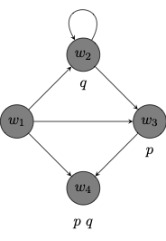
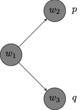
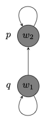
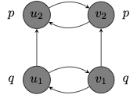
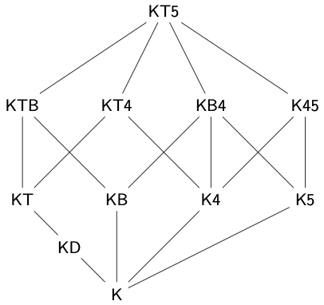
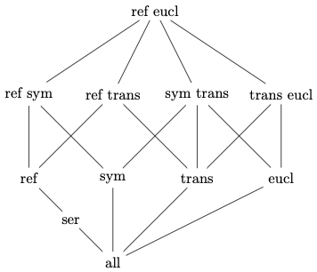
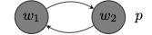
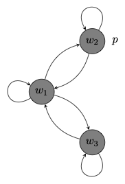

4 Modal Propositional Logic
We introduce the syntax and semantics of the modal propositional language.
4.1 Syntax
We first specify the syntax of a modal propositional language:
We choose a stock of propositional variables or atoms:
\[ AT := p, q, r, \cdots \]
We define the formulas of a propositional language \(\mathcal{L}\) recursively:
\[ \varphi ::= AT \ | \ \neg \varphi \ | \ (\varphi \to \psi) \ | \ \Box \varphi \]
Here is how to read the last line:
All atoms are formulas.
If \(\varphi\) is a formula, then \(\neg \varphi\) is a formula.
If \(\varphi\) and \(\psi\) are formulas, then \((\varphi \to \psi)\) is a formula.
If \(\varphi\) is a formula, then \(\Box \varphi\) is a formula.
That is, a string of symbols is a formula if, and only if, it arises from atoms from negation, conditional, and the box in a finite number of steps.
We now define further connectives and \(\Diamond\) in terms of \(\neg\), \(\to\) and \(\Box\):
Definition 4.1 (Connectives) \[ \begin{array}{lll} \top & := & (p \to p)\\ \bot & := & \neg \top \\ (\varphi \vee \psi) & := & (\neg \varphi \to \psi)\\ (\varphi \wedge \psi) & := & \neg (\varphi \to \neg \psi)\\ (\varphi \leftrightarrow \psi) & := & (\varphi \to \psi) \wedge (\psi \to \varphi)\\ \Diamond \varphi & := & \neg \Box \neg \varphi\\ \end{array} \]
The inductive definition of formula vindicates a principle of induction for formulas.
Given a condition \(\Phi(\alpha)\) on formulas of \(\mathcal{L}\), if
- all atoms satisfy \(\Phi(\alpha)\),
- whenever a formula \(\varphi\) satisfies \(\Phi(\alpha)\), \(\neg \varphi\) satisfies \(\Phi(\alpha)\),
- whenever two formulas \(\varphi\) and \(\psi\) satisfy \(\Phi(\alpha)\), \((\varphi \to \psi)\) satisfies \(\Phi(\alpha)\), and
- whenever a formula \(\varphi\) satisfies \(\Phi(\alpha)\), \(\Box \varphi\) satisfies \(\Phi(\alpha)\),
then every formula satisfies \(\Phi(\alpha)\)
We now generalize uniform substitution for the modal propositional language.
Given a formula \(\varphi\) whose propositional variables are among \(p_1, \dots, p_n\) and formulas \(\psi_1, \dots, \psi_n\), define \(\varphi[\psi_1/p_1, ..., \psi_n/p_n]\) inductively:
If \(\varphi\) is \(p_i\), \(\varphi[\psi_1/p_1, ..., \psi_n/p_n]\) is \(\psi_i\).
If \(\varphi\) is \(\neg \chi\), \(\varphi[\psi_1/p_1, ..., \psi_n/p_m]\) is \(\neg \chi[\psi_1/p_1, ..., \psi_n/p_m]\).
If \(\varphi\) is \((\chi \to \rho)\), then \(\varphi[\psi_1/p_1, ..., \psi_n/p_n]\) is \((\chi[\psi_1/p_1, ..., \psi_n/p_n]\to \rho[\psi_1/p_1, ..., \psi_n/p_n])\).
If \(\varphi\) is \(\Box \chi\), \(\varphi[\psi_1/p_1, ..., \psi_n/p_m]\) is \(\Box \chi[\psi_1/p_1, ..., \psi_n/p_m]\).
4.2 Possible Worlds Semantics
We use possible worlds models to interpret the modal propositional language.
A possible worlds model \(M\) for \(\mathcal{L}^\Box\) is a structure \((W, R, V)\) where:
\(W\) is a non-empty set of worlds
\(R\) is a binary accessibility relation on \(W\)
\(V\) maps each propositional variable \(p\) to a set of worlds \(V(p) \subseteq W\).
When \(Ruv\), sometimes written \(uRv\), we will write that \(v\) is accessible from \(u\) or that \(u\) sees \(v\). The accessibility relation represents a relation of relative possibility: \(v\) is accessible from \(u\) corresponds to the claim that \(v\) is possible relative to \(u\).
\(V\) maps a propositional variable \(p\) to a set of worlds \(w\) at which \(p\) is true. So, when \(w \in V(p)\), we will write that \(p\) is true at \(w\).
One way to think of the assignment \(V\) is as a specification of the set of worlds at which each propositional variable is true.
We will use directed graphs to represent possible worlds models.
Here is a depiction of a possible worlds model of the form \((W, R, V)\) where:
\(W = \{w_1, w_2, w_3, w_4\}\)
\(R = \{(w_1, w_2), (w_2, w_3), (w_3, w_4), (w_1, w_4), (w_1, w_3), (w_2, w_2)\}\)
\(V(p) = \{w_3, w_4\}\); \(V(q) = \{w_2, w_4\}\)

Each node corresponds to a possible world in the model.
The accessibility relation relates one world to another when there is an arrow that points from the first to the second.
The graph records the propositional variables that are true at each world according to the assignment \(V\). If a propositional variable is not written at a node of the diagram, then the variable is not true at that world on the valuation depicted by the graph.
We do not have the means yet to ask whether a complex formula \(\varphi\) is true at a world in a model. To that purpose, we provide a recursive definition of a semantic relation between a world \(w\) in a model \(M\) and a formula \(\varphi\).
We define what is for a formula \(\varphi\) to be true at a world \(w\) in a possible worlds model \(M\), which we write: \(M, w \Vdash \varphi\): \[ \begin{array}{lll} M, w \Vdash p & \text{iff} & w \in V(p)\\ M, w \Vdash \neg \varphi & \text{iff} & M, w \nVdash \varphi\\ M, w \Vdash (\varphi \to \psi) & \text{iff} & M, w \nVdash \varphi \ \text{or} \ M, w \Vdash \psi\\ M, w \Vdash \Box \varphi & \text{iff} & \text{for every} \ u \in W \ \text{such that} \ Rwu, \ M, u \Vdash \varphi\\ \end{array} \]
Given the usual defintion of \(\Diamond\) in terms of \(\Box\), we find that \[ \begin{array}{lll} M, w \Vdash \Diamond \varphi & \text{iff} & \text{for some} \ u \in W \ \text{such that} \ Rwu, \ M, u \Vdash \varphi\\ \end{array} \]
We may return to the example above to explain how to compute the truth value of a formula at a world in a model.
Evaluate each of the complex modal formulas given below at each possible world in the model:
\(p \to (p \to q)\)
This formula is true at worlds \(w_1\), \(w_2\) \(w_3\) but not at \(w_4\).
- \(M, w_4 \nVdash p \to (p \to q)\) because \(M, w_4 \Vdash p\), yet \(M, w_4 \nVdash p \to q\). That is, \(p\) is true at \(w_4\) but \(p\to q\) is not true at \(w_4\).
\(\Box p\)
This formula is true exactly at worlds \(w_3\) and \(w_4\).
\(M, w_1 \nVdash \Box p\) because \(Rw_1w_2\) and \(M, w_2 \nVdash p\). That is, \(\Box p\) is not true at \(w_1\) because \(p\) is not true at \(w_2\), which is world accessible from \(w_1\).
\(M, w_2 \nVdash \Box p\) because \(Rw_2w_2\) and \(M, w_2 \nVdash p\).
\(M, w_3 \Vdash \Box p\) because for every \(u \in W\), if \(Rw_3 u\), then \(M, u \Vdash p\). That is \(p\) is true at all worlds that are accessible from \(w_3\), namely, \(w_4\).
\(M, w_4 \Vdash \Box p\) because for every \(u \in W\), if \(Rw_4 u\), then \(M, u \Vdash p\). That is \(p\) is true at all worlds that are accessible from \(w_4\) which in this case are none.
\(\Diamond \Box p\)
This formula is true exactly at worlds \(w_1\), \(w_2\) and \(w_3\) but not at \(w_4\).
\(M, w_1 \Vdash \Diamond \Box p\) because \(Rw_1w_3\) and \(M, w_3 \Vdash \Box p\). That is, \(\Box p\) is true at some world that is accessible from \(w_1\), namely, \(w_3\).
\(M, w_2 \Vdash \Diamond \Box p\) because \(Rw_2w_3\) and \(M, w_3 \Vdash \Box p\).
\(M, w_3 \nVdash \Diamond \Box p\) because because there is no \(u\in W\) such that \(Rw_3u\) and \(M, u \Vdash \Box p\). Since no world is accessible from \(w_3\), \(\Box p\) is not true at a world that is accessible from \(w_3\).
\(M, w_4 \nVdash \Diamond \Box p\) because there is no \(u\in W\) such that \(Rw_4u\) and \(M, u \Vdash \Box p\).
\(\Box (q \to p)\)
This formula is true exactly at worlds \(w_3\) and \(w_4\).
\(M, w_1 \nVdash \Box (q \to p)\) because \(Rw_1w_2\) and \(M, w_2 \nVdash q \to p\). That is, \(q \to p\) is not true at every world that is accessible from \(w_1\), e.g., it is not true at \(w_3\).
\(M, w_2 \nVdash \Box (q \to p)\) because \(Rw_2w_2\) and \(M, w_2 \nVdash q \to p\).
\(M, w_3 \Vdash \Box (q \to p)\) because for every \(u \in W\), if \(Rw_3 u\), then \(M, u \Vdash q \to p\). That is \(q \to p\) is true at all worlds that are accessible from \(w_3\), namely, \(w_4\).
\(M, w_4 \Vdash \Box (q \to p)\) because for every \(u \in W\), if \(Rw_4 u\), then \(M, u \Vdash q \to p\). That is \(q \to p\) is true at all worlds that are accessible from \(w_4\) which in this case are none.
We finally define what is for a formula to be true at a model.
A formula \(\varphi\) to be true in a possible worlds model \(M\), which we write \(M \Vdash \varphi\) if, and only if, for all \(w\in W\), \(M, w \Vdash \varphi\).
We now return to the example above.
Here is how to evaluate complex modal formulas in the model:
\(\neg p \to \Diamond p\)
This formula is true in the model because it is true at all possible worlds.
\(\neg p \to \Diamond p\) is true at \(w_3\) and \(w_4\) because \(\neg p\) is not true at either world.
\(\neg p \to \Diamond p\) is true at \(w_1\) and \(w_2\) because \(\Diamond p\) is true at both worlds: \(\Diamond p\) is true at \(w_1\) because \(Rw_1w_3\) and \(p\) is true at \(w_3\), and \(\Diamond p\) is true at \(w_2\) because \(Rw_2w_3\) and \(p\) is true at \(w_3\).
\(p \to \Box q\)
This formula is true in the model because it is true at all possible worlds.
\(p \to \Box q\) is true at \(w_1\) and \(w_2\) because \(p\) is not true at either world.
\(p \to \Box q\) is true at \(w_3\) and \(w_4\) because \(\Box q\) is true at both worlds: \(\Box q\) is true at \(w_3\) because \(q\) is true at all worlds accessible from \(w_3\), namely, \(w_4\); \(\Box q\) is true at \(w_4\) because \(q\) is true at all worlds accessible from \(w_4\), namely, none.
4.2.1 Frames
We make a distinction between two ingredients for a possible worlds model. One is the frame of the model, which consists of a set of worlds \(W\) and a relation \(R\) on \(W\), and the other is the assignment \(V\) based on that frame.
A frame \(F\) for \(\mathcal{L}^\Box\) is an ordered pair \((W, R)\) where:
\(W\) is a non-empty set of worlds, and
\(R\) is a binary accessibility relation on \(W\)
A model \(M\) is based on a frame \(F = (W, R)\) if, and only if, there is an assignment \(V\) such that \(M = (F, V)\). That is, \(M = (W, R, V)\).
For a formula \(\varphi\) of \(\mathcal{L}^\Box\) to be valid in a frame is to be true in every model based on that frame, that is, to be true at every world of every model based on that frame.
A formula \(\varphi\) is valid in a frame \((W, R)\), written \((W, R) \models \varphi\), if, and only if, \(\varphi\) is true in every model \((W, R, V)\) based on the frame \((W, R)\).
That is, the formula remains true across assignments no matter what sets of worlds we assign to what propositional variables.
Here are two formulas of \(\mathcal{L}^\Box\) that are valid in every frame:
\(\Diamond (p \vee q) \leftrightarrow (\Diamond p \vee \Diamond q)\)
\(\Box (p \wedge q) \leftrightarrow (\Box p \wedge \Box q)\)
More generally, \(\Diamond\) distributes over disjunction and \(\Box\) distributes over conjunction. Both biconditionals are true at every world of every possible worlds model, which means that they are true in every model based on every frame.
Here are, on the other hand, two formulas of \(\mathcal{L}^\Box\) that are not valid in every frame:
\(\Diamond (p \wedge q) \leftrightarrow (\Diamond p \wedge \Diamond q)\)
\(\Box (p \vee q) \leftrightarrow (\Box p \vee \Box q)\)
For a counterexample to the validity distributivity of \(\Diamond\) over conjunction in every frame, consider the model below:

Notice that \(\Diamond p \wedge \Diamond q\) is true at \(w_1\) because each conjunct is true at \(w_1\):
\(\Diamond p\) is true at \(w_1\) because \(p\) is true at \(w_2\), which is accessible from \(w_1\)
\(\Diamond q\) is true at \(w_1\) because \(q\) is true at \(w_3\), which is accessible from \(w_1\)
Yet, \(\Diamond (p \wedge q)\) is false at \(w1\) because \(p \wedge q\) is not true at any world accessible from \(w_1\).
Notice that the model doubles as a counterexample to distributivity of \(\Box\) over \(\vee\) in every frame:
The formula \(\Box (p \vee q)\) is true at \(w_1\) because \(p \vee q\) is true at every world accessible from \(w_1\):
\(p \vee q\) is true at \(w_2\) because \(p\) is true at \(w_2\).
\(p \vee q\) is true at \(w_3\) because \(q\) is true at \(w_3\).
However, \(\Box p \vee \Box q\) is not true at \(w_1\) because neither \(\Box p\) nor \(\Box q\) is true at \(w_1\).
\(\Box p\) is not true at \(w_1\) because \(p\) is not true at \(w_3\), which is accessible from \(w_1\).
\(\Box q\) is not true at \(w_1\) because \(q\) is not true at \(w_2\), which is accessible from \(w_1\).
We will often restrict attention to a class of frames and ask which formulas are valid in all and only those frames in the class.
A formula \(\varphi\) is valid in a class of frames \(\mathcal{C}\), written \(\models_{\mathcal{C}} \varphi\) if, and only if, \(\varphi\) is valid in every frame \((W, R)\) in the class \(\mathcal{C}\).
Proposition 4.1 Each formula listed below is valid in a frame if the accessibility relation satisfies the relevant condition.
| Formula | Condition on \(R\) | |
|---|---|---|
| \(\textsf{T}\) | \(\Box p \to p\) | reflexive on \(W\) |
| \(\textsf{B}\) | \(p \to \Box \Diamond p\) | symmetric on \(W\) |
| \(\textsf{4}\) | \(\Box p \to \Box \Box p\) | transitive on \(W\) |
| \(\textsf{5}\) | \(\Diamond p \to \Box \Diamond p\) | euclidean on \(W\) |
Proof. We look at each case in turn:
- \(\textsf{T}\) is valid in all reflexive frames.
- Let \((W, R, V)\) be a model based on a reflexive frame \((W, R)\). Given \(w \in W\), suppose \((W, R, V), w \Vdash \Box p\), which means that for all \(u\in W\), if \(Rwu\), then \(u \in V(p)\). Since \(R\) is reflexive, \(Rww\) and \(w \in V(p)\). So, \((W, R, V), w \Vdash \Box p\) and \((W, R, V), w \Vdash \Box p \to p\). Generalizing, we conclude \((W, R, V) \Vdash \Box p\).
- \(\textsf{B}\) is valid in all symmetric frames.
- Let \((W, R, V)\) be a model based on a symmetric frame \((W, R)\). Given \(w \in W\), suppose \((W, R, V), w \Vdash p\), which means that \(w \in V(p)\). Let \(u\in W\) be such that \(Rwu\). Since \(R\) is symmetric on \(W\), \(Rwu\), which means that \((W, R, V), u \Vdash \Diamond p\). Generalizing, for every \(u\in W\), if \(Rwu\), \((W, R, V), u \Vdash \Diamond p\). We conclude that \((W, R, V), w \Vdash \Box \Diamond p\) and \((W, R, V), w \Vdash p \to \Box \Diamond p\). Generalizing again, we find \((W, R, V) \Vdash p \to \Box \Diamond p\).
- \(\textsf{4}\) is valid in all transitive frames.
- Let \((W, R, V)\) be a model based on a transitive frame \((W, R)\). Given \(w \in W\), suppose \((W, R, V), w \Vdash \Box p\), which means that for all \(u\in W\), if \(Rwu\), then \(u \in V(p)\). Let \(u\in W\) be such that \(Rwu\). We want to verify that \((W, R, V), u \Vdash \Box p\). For let \(t\in W\) be such that \(Rut\). Since \(R\) is transitive on \(W\), \(Rwt\), which means that \(t\in V(p)\) and \((W, R, V), t \Vdash p\). Generalizing, for every \(t\in W\), if \(Rut\), \((W, R, V), t \Vdash p\). We conclude that \((W, R, V), u \Vdash \Box p\) and \((W, R, V), w \Vdash \Box \Box p\). So, \((W, R, V), w \Vdash \Box p \to \Box \Box p\). Generalizing again, we infer \((W, R, V) \Vdash \Box p \to \Box \Box p\).
- \(\textsf{5}\) is valid in euclidean frames.
- Let \((W, R, V)\) be a model based on a euclidean frame \((W, R)\). Given \(w \in W\), suppose \((W, R, V), w \Vdash \Diamond p\), which means that for some \(u\in W\) such that \(Rwu\), we have \(u \in V(p)\). Let \(t \in W\) be such that \(Rwt\). Since \(R\) is euclidean, \(Rtu\), which means that \((W, R, V), t \Vdash \Diamond p\). Generalizing, we find that for every \(t\in W\), if \(Rut\), \((W, R, V), t \Vdash \Diamond p\). So, \((W, R, V), w \Vdash \Box \Diamond p\). So, \((W, R, V), w \Vdash \Diamond p \to \Box \Diamond p\). Generalizing again, we infer \((W, R, V) \Vdash \Diamond p \to \Box \Diamond p\).
\(\blacksquare\)
4.2.2 Frame Definability
The success of the possible worlds semantics is connected to the fact that it sheds new light on modal principles via systematic correspondences between the validity of those principles and certain structural features of the modal accesssibility relation \(R\) on a set of worlds \(W\) in a frame \((W, R)\).
Proposition 4.2 Each formula listed below is valid in a frame only if the accessibility relation satisfies the relevant condition.
| Formula | Condition on \(R\) | |
|---|---|---|
| \(\textsf{T}\) | \(\Box p \to p\) | reflexive on \(W\) |
| \(\textsf{B}\) | \(p \to \Box \Diamond p\) | symmetric on \(W\) |
| \(\textsf{4}\) | \(\Box p \to \Box \Box p\) | transitive on \(W\) |
| \(\textsf{5}\) | \(\Diamond p \to \Box \Diamond p\) | euclidean on \(W\) |
Proof. We provide two styles of argument for each case. One targets the contrapositive, while the other consists of a direct proof of the conditional.
- \(\textsf{T}\) is only valid in reflexive frames.
If \(R\) is not reflexive on \(W\) in a frame \((W,R)\), then there is an assignment \(V\) and a world \(w\in W\) such that \((W, R, V) \nVdash \Box p \to p\).
Suppose \(R\) is not reflexive on \(W\) in a frame \((W,R)\). That means that there is a world \(w \in R\) such that \(\neg Rww\). Define \(V\) to let \(V(p) = W \setminus \{w\}\). On the one hand, \((W, R, V), w \Vdash \Box p\) because \(p\) is true at any world accessible from \(w\). On the other hand, \((W, R, V), w \nVdash p\) because \(w \notin V(p)\). So, \((W, R, V), w \nVdash \Box p \to p\)
If \((W, R) \models \Box p \to p\), then \(R\) is reflexive on \(W\).
Suppose \((W, R) \models \Box p \to p\). Fix \(w \in W\) and consider the assignment \(V(p) = \{u\in W: Rwu\}\). It follows that \((W, R, V), w \Vdash \Box p\). Since \((W, R, V), w \Vdash \Box p \to p\), we infer \(w \in V(p)\), which means that \(Rww\).
- \(\textsf{B}\) is only valid in symmetric frames.
If \(R\) is not symmetric on \(W\) in a frame \((W,R)\), then there is an assignment \(V\) and a world \(w\in W\) such that \((W, R, V) \nVdash p \to \Box \Diamond p\).
Suppose \(R\) is not symmetric on \(W\) in a frame \((W,R)\). That means that there are two worlds \(w, u \in R\) such that \(Rwu\) and \(\neg Ruw\). Define \(V\) to let \(V(p) = \{w\}\). On the one hand, \((W, R, V), w \Vdash p\) because \(w \in V(p)\). On the other hand, \((W, R, V), w \nVdash \Box \Diamond p\) because \(Rwu\) and \((W, R, V), u \nVdash \Diamond p\). The reason for this is that \(\neg Ruw\) and \(w\) is the only world at which \(p\) is true in the model.
If \((W, R) \models p \to \Box \Diamond p\), then \(R\) is symmetric on \(W\).
Suppose \((W, R) \models p \to \Box \Diamond p\). Fix \(w, u \in W\) and consider the assignment \(V(p) = \{w\}\). It follows that \((W, R, V), w \Vdash p\). Since \((W, R, V), w \Vdash \Box \Diamond p\) and \(Rwu\), we infer that \((W, R, V), u \Vdash \Diamond p\), which means that \(Ruw\) as \(V(p)= \{w\}\). Generalizing, we conclude that \(R\) is symmetric on \(W\).
- \(\textsf{4}\) is only valid in transitive frames.
If \(R\) is not transitive on \(W\) in a frame \((W,R)\), then there is an assignment \(V\) and a world \(w\in W\) such that \((W, R, V) \nVdash \Box p \to \Box \Box p\).
Suppose \(R\) is not transitive on \(W\) in a frame \((W,R)\). That means that there are three worlds \(w, u, t \in R\) such that \(Rwu\) and \(Rut\) but \(\neg Rwt\). Define \(V\) to let \(V(p) = \{v\in W: Rwv\}\). On the one hand, \((W, R, V), w \Vdash \Box p\) because \(v\in V(p)\) for every \(v\in W\) such that \(Rwv\). On the other hand, \((W, R, V), w \nVdash \Box \Box p\) because \(Rwu\) and \((W, R, V), u \nVdash \Box p\). The reason for this is that \(Rut\) and \(t\notin V(p)\) since \(\neg Rwt\).
If \((W, R) \models \Box p \to \Box \Box p\), then \(R\) is transitive on \(W\).
Suppose \((W, R) \models \Box p \to \Box \Box p\). Fix \(w, u, t \in W\) and assume \(Rwu\) and \(Rut\). Consider an assignment \(V\) on which \(V(p) = \{v: Rwv \}\). If \((W, R, V), w \Vdash \Box p\), then since \(Rwu\) and \((W, R), w \vDash \Box p \to \Box \Box p\), \((W, R, V), w \Vdash \Box \Box p\) and \((W, R), u \vDash \Box p\). So, since \(Rut\), \((W, R), t \vDash p\). That means that \(u\in V(p)\) and, by definition of \(V\), \(Rwt\).
- \(\textsf{5}\) is only valid in euclidean frames.
If \(R\) is not euclidean on \(W\) in a frame \((W,R)\), then there is an assignment \(V\) and a world \(w\in W\) such that \((W, R, V) \nVdash \Diamond p \to \Box \Diamond p\).
Suppose \(R\) is not euclidean on \(W\) in a frame \((W,R)\). That means that there are three worlds \(w, u, t \in R\) such that \(Rwu\) and \(Rwt\) but \(\neg Rut\). Define \(V\) to let \(V(p) = \{t\}\). On the one hand, \((W, R, V), w \Vdash \Diamond p\) because \(t\in V(p)\) and \(Rwt\). On the other hand, \((W, R, V), w \nVdash \Box \Diamond p\) because \(Rwu\) and \((W, R, V), t \nVdash \Diamond p\), since \(\neg Rut\).
If \((W, R) \models \Box p \to \Box \Box p\), then \(R\) is euclidean on \(W\).
Suppose \((W, R) \models \Diamond p \to \Box \Diamond p\). Fix \(w, u \in W\) and consider the assignment \(V(p) = \{u\}\). It follows that \((W, R, V), w \Vdash \Diamond p\). Since \((W, R, V), w \Vdash \Box \Diamond p\) and \(Rwu\), we infer that \((W, R, V), u \Vdash \Diamond p\), which means that \(Ruw\) as \(V(p)= \{w\}\). Generalizing, we conclude that \(R\) is euclidean on \(W\).
\(\blacksquare\)
Let us make precise the the observation that each of the formulas discussed characterizes a class of frames.
A formula \(\varphi\) of \(\mathcal{L}^\Box\) modally defines a class of frames \(\mathcal{C}\) iff for all frames \((W, R)\),
\[ \begin{array}{lll} (W, R) \models \varphi & \text{iff} & (W, R) \in \mathcal{C} \end{array} \]
Each of the formulas discussed above defines the class of frames in which the accessibility relation satisfies the relevant formal condition. That is,
\(\textsf{T}\) modally defines the class of reflexive frames
\(\textsf{B}\) modally defines the class of symmetric frames
\(\textsf{4}\) modally defines the class of transitive frames
\(\textsf{5}\) modally defines the class of euclidean frames
The expressive power of propositional modal logic is measured by the ability to make distinctions. The language affords us the means to distinguish reflexive from non-reflexive frames in terms of the validity of the formula \(\Box p \to p\). Likewise, we have the means to make distinctions between symmetric and non-symmetric frames or between transitive and non-transitive frames.
First-order languages are able to make similar distinctions. Given a first-order language with a binary relational predicate \(R\) as a non-logical predicate, we are in a position to specify first-order formulas that characterize different classes of frames:
| Frames | Modal Definability | First-Order Definability |
|---|---|---|
| Reflexive | \(\Box p \to p\) | \(\forall x \ Rxx\) |
| Symmetric | \(p \to \Box \Diamond p\) | \(\forall x \forall y (Rxy \to Ryx)\) |
| Transitivity | \(\Box p \to \Box \Box p\) | \(\forall x \forall y \forall z (Rxy \wedge Ryz \to Rxz)\) |
| Euclidean | \(\Diamond p \to \Box \Diamond p\) | \(\forall x \forall y \forall z (Rxy \wedge Rxz \to Ryz)\) |
One may now compare the expressive power of modal and first-order logic. Even if the class of reflexive, symmetric, and transitive frames are each modal and first-order definable, one may wonder whether every class of formulas defined by a first-order formula is modally definable and, vice versa, whether every modally definable frame is first-order definable.
The answer to both questions is ‘no’. Some formulas of \(\mathcal{L}^\Box\) are able to modally define classes of frames that are not first-order definable, and some classes of frames that are first-order definable are not modally definable by a formula of \(\mathcal{L}^\Box\).
| Frames | Modal Definability | First-Order Definability |
|---|---|---|
| Irreflexive | No | \(\forall x \ \neg Rxx\) |
| Universal | No | \(\forall x \forall y Rxy\) |
| Transitive Converse Well-Founded | \(\Box (\Box p \to p) \to \Box p\) | No |
| Identity | Yes | \(\forall x \forall y (Rxy \leftrightarrow x = y)\) |
| Functional | Yes | \(\forall x \forall y (Rxy \wedge Rxz \to x =y)\) |
| Serial | Yes | \(\forall x \exists y Rxy\) |
A binary relation \(R\) on a set \(W\) converse well-founded iff there are no infinite ascending \(R\)-chains of the form \(x_1Rx_2 \cdots x_nRx_{n+1} \cdots\).
Proposition 4.3 The class of transitive converse well-founded frames is not first-order definable.
This is a consequence of the Compactness Theorem for first-order logic: if a set of first-order formulas \(\Gamma\) is finitely satisfiable, then \(\Gamma\) is finitely satisfiable.
Proof. For each natural number \(n > 0\), let \(\varphi_n\) be a formula according to which there is a finite \(R\)-chain with at least \(n+1\) nodes:
\[ \varphi_n := \exists x_1 \dots \exists x_n \ (Rx_1x_2 \wedge \dots \wedge Rx_n x_{n+1}) \] For every first-order formula \(\psi\), if \(\psi\) is true of every converse-well-founded frame, then if \(\Sigma\) is a set of formulas that requires \(R\) to form a linear order, that is, be irreflexive, transitive, and connected, then \[ \Sigma \cup \{\varphi_n: n > 0\}, \psi \] is finitely satisfiable. If \(\Delta\) is a finite subset of that set, then there is a largest \(n\) for which \(\varphi_n \in \Delta\), and a frame \((W, R)\) in which \(R\) is a linear order of exactly \(n\) worlds will satisfy \(\Delta\). By Compactness, \(\Sigma \cup \{\varphi_n: n > 0\}, \psi\) is satisfiable, which requires a frame \((W, R)\) in which \(R\) is a linear order of an infinity of worlds in \(W\). So, \(\psi\) is satisfiable in a non-converse-well-founded frame. So, if \(\psi\) is true of every converse well-founded frame, then it is true of some non-converse-well-founded frames.
\(\blacksquare\)
Proposition 4.4 \(\Box (\Box p \to p) \to \Box p\) modally defines the class of converse well-founded frames.
Proof. We want to prove that for all frames \((W, R)\),
\[ \begin{array}{lll} (W, R) \models \Box (\Box p \to p) \to \Box p & \text{iff} & R \ \text{transitive} \ \text{and} \ \text{converse}\\ & & \text{well-founded on} \ W \end{array} \] (\(\Rightarrow\)) Suppose \(R\) is not transitive. Then there are worlds \(w, u, v\in W\) such that \(wRu\) and \(uRv\) but not \(wRv\). In that case, let \(V(p) = W \setminus \{u, v\}\) and note that \((W, R, V), w \nVdash \Box p\) and \((W, R, V), u \nVdash \Box p\). Furthermore, \((W, R, V), u \nVdash \Box p \to p\). However, by definition of \(V\), if \(Rwt\), then either \(t =u\) or \(t \in V(p)\). Either way, \((W, R, V), t \Vdash p\) and \((W, R, V), t \Vdash \Box p \to p\). So, \((W, R, V), w \Vdash \Box (\Box p \to p)\). So, \((W, R, V), w \nVdash \Box (\Box p \to p) \to \Box p\).
Now, suppose \(R\) is not converse well-founded. Then there is an infinite \(R\)-chain \(u_1 Ru_2 \dots u_nRu_{n+1} \dots\). In that case, we efine \(V(p)\) to exclude every member of the \(R\)-chain, that is, \(V(p) = W \setminus \{u_1, u_2, \dots\}\). Given some \(w \in X\), we argue that \((W, R, V), w \Vdash \Box (\Box p \to p)\) even though \((W, R, V), w \nVdash \Box p\). For the former, note that \((W, R, V), u_n \nVdash \Box p\) for each member \(u_n\) of the infinite \(R\)-chain. So, \((W, R, V), u_n \Vdash \Box p \to p\) and \((W, R, V), u_n \Vdash \Box (\Box p \to p)\) for every member \(u_n\) of the infinite \(R\)-chain. So, \((W, R, V), u_n \nVdash \Box (\Box p \to p) \to \Box p\) for every member \(u_n\) of the infinite \(R\)-chain.
(\(\Leftarrow\)) Suppose \(R\) is transitive and converse well-founded. Furthermore, let \((W, R, V)\) be a model based on \((W, R)\) and let \(w \in W\). We now argue that \((W, R, V), w \Vdash \Box (\Box p \to p)\to \Box p\). For suppose \((W, R, V), w \nVdash \Box p\) and consider the set \(X=\{u \in W: wRu \wedge u\notin V(p) \}\). We know that this set is non-empty since \((W, R, V), w \nVdash \Box p\). Since \(R\) is converse well-founded, there is some \(v \in X\) such that \(\neg vRt\) for any \(t\in X\). Otherwise, we would have an infinite \(R\)-chain. Since \(v\in X\), we have that \((W, R, V), v \nVdash p\), despite the fact that if \(vRt\), by transitivity, \(wRt\) and since \(t\notin X\), \((W, R, V), t \Vdash p\). So, \((W, R, V), v \Vdash \Box p\) and \((W, R, V), v \nVdash \Box p \to p\). It follows that \((W, R, V), w \nVdash \Box (\Box p \to p)\).
\(\blacksquare\)
4.2.3 Bisimulations
We know that first-order formulas do not discriminate between isomorphic models. The role of isomorphism in first-order logic is played by bisimulation in modal propositional logic, since modal formulas do not discriminate between bisimilar models.
A bisimulation between two models \((W, R, V)\) and \((W', R', V')\) is a binary relation \(E \subseteq W \times W'\) such that for all \(w\in W\) forall \(w' \in W'\),
if \(wEw'\), then \(w\) and \(w'\) verify exactly the same propositional variables in each model, that is, for all propositional variable \(p\), \(w \in V(p)\) iff \(w' \in V'(p)\).
if \(wEw'\) and \(Rwu\) for some \(u\in W\), then there is some \(u'\in W'\) such that \(Rw'u'\) and \(uEu'\) (the forth condition)
if \(wEw'\) and \(Rw'u'\) for some \(u'\in W'\), then there is some \(u \in W\) such that \(Rwu\) and \(u'Eu\) (the back condition)
If \(E\) is a bisimulation between two models \((W, R, V)\) and \((W', R', V')\), we will call them bisimilar. Furthermore, if \(wEw'\), we will write that the two worlds \(w\) and \(w'\) are bisimilar.
There is a bisimulation \(E \subseteq W \times W'\) between the models depicted below:
| \((W, R, V)\) | \((W', R', V')\) |
|---|---|
|  |  |
\(E\) relates \(w_1\) to each \(u_1\) and \(v_2\), and \(E\) relates each of \(u_1\) and \(v_1\) to \(w_1\).
\(E\) relates \(w_2\) to each \(u_2\) and \(v_2\), and \(E\) relates each of \(u_2\) and \(v_2\) to \(w_2\).
One way to think of the situation is that \(w_1\) and \(w_2\) have each unfolded into two duplicate worlds \(u_1\) and \(v_1\) and \(u_2\) and \(v_2\), respectively. Notice, however, that the two models verify exactly the same formulas of propositional modal logic.
Proposition 4.5 (Invariance Lemma) If there is a bisimulation \(E\) between two models \((W, R, V)\) and \((W', R', V')\), then for all \(w\in W\), for all \(w'\in W'\), if \(wEw'\), the for every formula \(\varphi\) of \(\mathcal{L}^\Box\): \[ \begin{array}{lll} (W, R), w \Vdash \varphi & \text{iff} & (W', R'), w' \Vdash \varphi. \end{array} \]
Proof. The proof is by induction over the complexity of formulas.
- Base Case. If \(\varphi\) is a propositional variable \(p\), then if \(wEw'\), by clause 1 in the definition of bisimulation, \(w \in V(p)\) iff \(w' \in V'(p)\), which means
\[ \begin{array}{llll} (W, R, V), w \Vdash p & \text{iff} & w \in V(p) &\\ & & w' \in V'(p) & \text{Clause 1}\\ & & (W', R', V'), w' \Vdash p & \end{array} \] The Boolean cases are immediate:
- Inductive Step for \(\neg\):
\[ \begin{array}{llll} (W, R, V), w \Vdash \neg \varphi & \text{iff} & (W, R, V), w \nVdash \varphi & \\ & & (W', R', V'), w' \nVdash \varphi & IH \\ & & (W', R', V'), w' \Vdash \neg \varphi & \\ \end{array} \] On to the case of \(\to\):
- Inductive Step for \(\to\):
\[ \begin{array}{llll} (W, R, V), w \Vdash \varphi \to \psi & \text{iff} & (W, R, V), w \nVdash \varphi \ \text{or} \ (W, R, V), w \Vdash \psi & \\ & & (W', R', V'), w' \nVdash \varphi \ \text{or} \ (W', R', V'), w' \Vdash \psi & IH \\ & & (W', R', V'), w' \Vdash \varphi \to \psi& \\ \end{array} \] The case for \(\Box\) requires more attention:
- Inductive Step for \(\Box\):
\[ \begin{array}{llll} (W, R), w \Vdash \Box \varphi & \text{iff} & (W, R), u \Vdash \varphi \ \ \text{whenever} \ \ wRu & \\ & & (W', R'), u' \Vdash \varphi \ \ \text{whenever} \ \ w'R'u' & \text{Clauses 2, 3, and} \ IH\\ & & (W', R'), w' \Vdash \Box \varphi& \\ \end{array} \]
Here is a more detailed justification of the step from \((W, R), u \Vdash \varphi\) whenever \(u \in W\) and \(wRu\) to \((W', R'), u' \Vdash \varphi\) whenever \(u' \in W'\):
- Suppose \((W, R, V), u \Vdash \varphi\) whenever \(u \in W\) and \(wRu\). We now argue that if \(wEw'\), then \((W', R', V'), u' \Vdash \varphi\) whenever \(u' \in W'\) and \(w'Ru'\). For if \(w'R'u'\), then, by clause 2 or the back condition, there is some \(u \in W\) such that \(Rwu\) and \(uEu'\). Since \((W, R, V), w \Vdash \Box \varphi\), \((W, R, V), u \Vdash \varphi\), and by the Inductive Hypothesis, \((W', R', V'), u' \Vdash \varphi\) as required. So, we infer \((W', R', V'), w' \Vdash \Box \varphi\).
The converse direction is completely parallel but it makes use of clause 2 or the forth condition instead.
\(\blacksquare\)
Bisimulations are used to rule out the definability of some classes of frames.
Each model of the form \((W, R, V)\) is bisimilar to some irreflexive model of the form \((W', R', V')\).
In broad outline, given a model \((W, R, V)\), we will build a model \((W', R', V')\), which replace each reflexive world \(w\in W\), that is, each world that is accessible from itself, with a pair of duplicate worlds \(w^+\) and \(w^-\) in \(W'\), which are accessible from each other by \(R'\) but such that none of them is accessible from itself by \(R'\). We then proceed to make sure that for each propositional variable \(p\), each duplicate \(w^+\) and \(w^-\) is a member of \(V'(p)\) if \(w \in V(p)\) in the original model. Otherwise, \(R'\) and \(V'\) behave exactly like \(R\) and \(V\) in the original model.1
It is not difficult to verify that \((W, R, V)\) is bisimilar to \((W', R', V')\), which means that they verify exactly the same formulas. This is because the relation \(E\), which relates each reflexive world \(w \in W\) with its duplicates \(w^+\) and \(w^-\) in \(W'\) and relates every other world \(u\in W\) with itself is a bisimulation between the two models.
Proposition 4.6 (Modal Undefinability for Irreflexive Frames) No formula of \(\mathcal{L}^\Box\) modally defines the class of irreflexive frames.
Proof. No formula \(\varphi\) of \(\mathcal{L}^\Box\) is valid in all and only irreflexive frames. For suppose \(\varphi\) is valid only in irreflexive frames. That means that if \(R\) is not irreflexive on \(W\), then there is some model \((W, R, V)\) based on \((W, R)\) such that \((W, R, V) \nVdash \varphi\). Then, given our previous observation, there is a bisimilar irreflexive model \((W', R', V')\) where \((W', R', V') \nVdash \varphi\). But notice that since \((W', R', V')\) is based on an irreflexive frame \((W', R')\), we conclude that \(\varphi\) is not valid in all irreflexive frames.
\(\blacksquare\)
We will now argue that no formula \(\varphi\) of \(\mathcal{L}^\Box\) defines the class of universal frames \((W, R)\), that is, frames in which \(R\) is universal on \(W\), that is, for all \(w,u\in W\), \(Rwu\).
First, a lemma:
Lemma 4.1 A formula \(\varphi\) of \(\mathcal{L}^\Box\) is valid in all universal frames \((W,R)\) iff \(\varphi\) is valid in all equivalence frames \((W,R)\) in which \(R\) is an equivalence relation on \(W\).
Proof. Given a formula \(\varphi\), we look at each direction in turn:
If \((W, R)\models \varphi\) for all equivalence frames \((W,R)\), then \((W, R)\models \varphi\) for all universal frames \((W,R)\).
The contrapositive of this conditional is an immediate consequence of the observation that a universal relation \(R\) on \(W\) is reflexive and euclidean on \(W\). So, if \(R\) is universal on \(W\), then \(R\) is an equivalence relation on \(W\). But then, if \((W, R, V)\nVdash \varphi\) where \(R\) is the universal relation on \(W\), then \((W, R, V)\nVdash \varphi\) where \(R\) is an equivalence relation on \(W\).
If \((W, R)\models \varphi\) for all universal frames \((W,R)\), then \((W, R)\models \varphi\) for all equivalence frames \((W,R)\).
We set out to show the contrapositive. That is, if \(\varphi\) is not valid in all equivalence frames, then \(\varphi\) is not valid in all universal frames. Suppose \((W, R, V) \nVdash \varphi\), where \(R\) is an equivalence relation on \(W\). We set out to find a model \((W', R', V')\) where \(R'\) is a universal relation on \(W'\) and \((W', R', V') \nVdash \varphi\). Since \((W, R, V) \nVdash \varphi\), there is some \(w\in W\) such that \((W, R, V), w \nVdash \varphi\). Now:
\(W' = \{u\in W: Rwu\}\)
\(R' = R \cap (W' \times W')\)
\(V'(p) = V(p) \cap W'\)
That is, we let \(W'\) consist of the equivalence class corresponding to \(w\), \([w]_R\), and we let \(R'\) and \(V'\) be the restriction of \(R\) and \(V\) to that equivalence class.
A simple induction over the complexity of formulas reveals that for every formula \(\varphi\)
\[ \begin{array}{lll} (W, R, V), w \Vdash \varphi & \text{iff} & (W', R', V'), w' \Vdash \varphi \end{array} \]
\(\blacksquare\)
Corollary 4.1 No formula \(\varphi\) of \(\mathcal{L}^\Box\) modally defines the class of universal frames.
Proof. Suppose \(\varphi\) is valid in all universal frames. Then by the former proposition, \(\varphi\) is valid in all equivalence frames \((W, R)\) where \(R\) is an equivalence relation on \(W\). Since some of those frames are not universal frames, \(\varphi\) is not valid only in universal frames.
\(\blacksquare\)
Much of the interest of validity in the class of universal frames is that they seem particularly suited for the evaluation of modal formulas when the modal operator is interpreted in terms of metaphysical necessity. Since the logic of universal frames coincides with that of frames in which the accessibility relation is a relation of equivalence, we appear to have reason to accept the validity of substitution instances of each of the formulas we considered above:
| Formula | Condition on \(R\) | |
|---|---|---|
| \(\textsf{T}\) | \(\Box p \to p\) | reflexive on \(W\) |
| \(\textsf{B}\) | \(p \to \Box \Diamond p\) | symmetric on \(W\) |
| \(\textsf{4}\) | \(\Box p \to \Box \Box p\) | transitive on \(W\) |
| \(\textsf{5}\) | \(\Diamond p \to \Box \Diamond p\) | euclidean on \(W\) |
Yet, some have offered reason to resist this picture of metaphysical modality.
Roderick Chisholm invites one to consider a ship built from one-hundred wooden planks with a tolerant essence in that the ship could have survived the replacement of one plank with a new one even if not the replacement of every plank with a new plank. That is, it is part of the essence of the ship that it can survive the replacement of a single plank whenever it exists.
One is now asked to consider a chain of possibilities, which starts with the original ship and where each possibility differs from the next just by the replacement of a single plank.
| \(S\) | \(S_1\) | \(S_2\) | \(S_3\) | \(\cdots\) | \(S_{100}\) |
|---|---|---|---|---|---|
| \(@\) | \(w_1\) | \(w_2\) | \(w_3\) | \(\cdots\) | \(w_{100}\) |
The paradox of tolerant essence arises when we combine what would otherwise seem reasonable thoughts:
- Each pair of successive possible worlds contain the same ship, since by hypothesis, the ship’s essence tolerates the replacement of one plank with a new one.
- By the transitivity of identity, \(S\) is the same ship as each of the ships \(S_n\) in the series. So, if it is possible for the ship to survive the replacement of two planks, then it is possible for the ship to survive that of three planks, etc.
- \(S\) is not the same ship as \(S_100\) as they have no planks in common. It is not possible for the ship to survive the replacement of all planks.
Chisholm is inclined to reject the hypothesis that the ship has a tolerant essence: if it is essential to it to be made of the original planks, then there is no reason to even think that successive worlds in the series contain the same ship. One may alternatively attempt to blame vagueness for the problem. Maybe there comes a point at which it is indeterminate whether the original ship has survived the replacement of a given number of planks.
But the real problem is not due to vagueness. Sarah Jane Leslie proposes to consider an axe made from three parts: a blade, a shaft, and a handle, and to assume that the essence of the. axe is tolerant to the change of one of those three parts. We are now asked to consider a chain of just four worlds each containing an axe made from three parts, where each axe differs only by one part from an adjacent axe, and the original axe is contained in the first world. That is, the original axe is \(B_1 + S_1 + H_1\):
| \(B_1 + S_1 + H_1\) | \(B_2 + S_1 + H_1\) | \(B_2 + S_2 + H_1\) | \(B_2 + S_2 + H_2\) |
|---|---|---|---|
| \(@\) | \(w_1\) | \(w_2\) | \(w_3\) |
The paradox now arises when we note:
- Each pair of successive possible worlds contain the same axe, since by hypothesis, the axe’s essence tolerates one-part changes.
- By the transitivity of identity, \(B_1 + S_1 + H_1\) is the same axe as \(B_2 + S_2 + H_2\). So, it is possible for the firts axe to be made of \(B_2\), \(S_2\), and \(H_2\).
- \(B_1 + S_1 + H_1\) is not the same axe as \(B_2 + S_2 + H_2\) as they have none of their parts in common. So, it is not possible for the firts axe to be made of \(B_2\), \(S_2\), and \(H_2\).
Vagueness appears to play no role in this formulation of the problem. Nathan Salmon has used the first formulation of the paradox in to argue against the validity of \(4\) when \(\Box\) is read in terms of metaphysical modality. His thought is to deny that what is possible with respect to \(w_2\) is automatically possible with respect to \(w_1\). Consider the four propositions: \[ \begin{array}{lll} p_1 & & \text{Axe is made from} \ B_1, S_1, H_1\\ p_2 & & \text{Axe is made from} \ B_2, S_1, H_1\\ p_3 & & \text{Axe is made from} \ B_2, S_2, H_1\\ p_4 & & \text{Axe is made from} \ B_2, S_2, H_2\\ \end{array} \] Then:
- \(p_4\) is true at \(w_4\)
- \(p_3\) and \(\Diamond p_4\) are true at \(w_3\)
- \(p_2\) and \(\Diamond p_3\) and \(\Diamond \Diamond p_4\) are true at \(w_2\)
- \(p_1\) and \(\Diamond p_2\) and \(\Diamond \Diamond p_3\) and \(\Diamond \Diamond \Diamond p_4\) are true at \(w_1\)
There is no paradox, though we would have one if we accepted every substitution instance of the formula: \[\tag{4$^\Diamond$} \Diamond \Diamond p \to \Diamond p \] For we we would be in a position to hold \(\Diamond p_4\) is true at \(w_1\), which would be paradoxical. As it turns out, however, (\(4^\Diamond\)) is equivalent to (4) above.
4.3 Axiomatic Derivations
We now aim for an alternative characterization of the set of formulas of \(\mathcal{L}^\Box\) that are valid in different classes of frames. We will begin with a system K, whose theorems are all and only formulas of \(\mathcal{L}^\Box\) that are valid in every frame. We will later consider extensions of that system, whose theorems are all and only formulas valid in every frame in a certain class, e.g., reflexive, symmetric, transitive, etc.
4.3.1 The System \(\textsf{K}\)
The system consists of an infinite set of axioms and two rules of inference.
The axioms system \(\textsf{K}\) consists of an infinite set of axioms and two rules of inference.
The axioms of \(\textsf{K}\) include:
substitution instances of tautologies of propositional logic
substitution instances of the axiom: \[\tag{$\textsf{K}$} \Box(p \to q) \to (\Box p \to \Box q)\\ \]
The rules of inference of \(\textsf{K}\) include:
- Modus Ponens:
\[\tag{$\textsf{MP}$} \varphi, (\varphi \to \psi)/\psi %\text{If} \ \vdash \varphi \ \text{and} \ \vdash (\varphi \to \psi), \ \text{then} \ \vdash \psi \]
- Necessitation:
\[\tag{$\textsf{N}$} \varphi/\Box \varphi %\text{If} \ \vdash \varphi \ \text{then} \ \vdash \Box \varphi \]
A derivation in \(\textsf{K}\) is, as usual, a finite sequence of formulas \((\chi_1, \dots, \chi_n)\) of \(\mathcal{L}^\Box\), each of them
- a substitution instance of \(\textsf{K}\)
- the outcome of an application of \(\textsf{MP}\) to two prior formulas
- the outcome of an application of \(\textsf{N}\) to a prior formula
A formula \(\varphi\) of \(\mathcal{L}^\Box\) is a theorem of \(\textsf{K}\), written \(\vdash_{\textsf{K}} \varphi\), if, and only if, some proof in K ends with the formula \(\varphi\).
The axioms of the minimal modal logic \(K\) are valid in all frames, and the rules of inference preserve validity in all frames. So, every theorem of \(K\) is valid in every frame.
Proposition 4.7 All substitution instances of axiom \(\textsf{K}\) is valid in all frames. \[\tag{$\textsf{K}$} \Box(p \to q) \to (\Box p \to \Box q)\\ \]
Proof. Consider a substitution instance of axiom \(\textsf{K}\): \[ \Box (\varphi \to \psi) \to (\Box \varphi \to \Box \psi). \] Let \((W, R)\) be a frame and let \((W, R, V)\) be a model based on that frame. We argue that \((W,R,V) \models \Box (\varphi \to \psi) \to (\Box \varphi \to \Box \psi)\). To that end, let \(w \in W\) and suppose that \((W,R,V), w \Vdash \Box (\varphi \to \psi)\) and \((W,R,V), w \Vdash \Box \varphi\). If \(u\in W\) is such that \(Rwu\), then \((W,R,V), u \Vdash \varphi \to \psi\) and \((W,R,V) \Vdash \varphi\). Therefore, \((W,R,V), u \Vdash \psi\). Generalizing, we find \((W,R,V), w \Vdash \Box \psi\).
\(\blacksquare\)
While it is a purely mechanical procedure to check whether a finite sequence of formulas is a proof in a given system, it may take some skill and experience to find one. There is no perfectly general recipe for this, but as a general piece of advice, it helps to spend some time considering the question of why the formula should be valid. Since proofs and theorems of \(\textsf{K}\) track validity in all frames, the question of validity may on occasion guide us to a proof.
4.3.1.1 Derived Rules of Inference
One important observation at this poins is that we are entitled to propositional inferences within the system. If two formulas are propositionally equivalent, then you should feel free to move from one to the other. Here is a formal justification of that fact.
Proposition 4.8 If \(\vdash_{\textsf{K}} \varphi_1, \dots, \vdash_{\textsf{K}} \varphi_n\) and \(\psi\) is derivable from \(\{\varphi_1, \dots, \varphi\}\) in propositional logic, then \(\vdash_{\textsf{K}} \psi\).
Proof. Given the Deduction Theorem for Propositional Logic, if \(\psi\) is derivable from \(\{\varphi_1, \dots, \varphi\}\) in propositional logic, then \(\varphi_1 \to (\varphi_2 \to (\dots (\varphi_n \to \psi)\dots))\) is a theorem of propositional logic and thus a theorem of \(K\). By repeated applications of Modus Ponens, we infer \(\vdash_\textsf{K} \psi\).
\(\blacksquare\)
We are similarly able to justify derived rules of inference, which will help us take a more direct route between two steps in a proof.
If \(\vdash_{\textsf{K}} \varphi \to \psi\), then \(\vdash_{\textsf{K}} \Box \varphi \to \Box \psi\).
Proof. We may transform a derivation of \(\varphi \to \psi\) into a derivation of \(\varphi \to \Box \psi\). \[ \begin{array}{lllll} 1 & & \varphi \to \psi & \text{Given}\\ 2 & & \Box (\varphi \to \psi) & \text{RN} \ 1\\ 3 & & \Box (\varphi \to \psi) \to (\Box \varphi \to \Box \psi) & K[\varphi/p, \psi/q]\\ 4 & & \Box \varphi \to \Box \psi & \text{MP} \ 2, 3\\ \end{array} \]
\(\blacksquare\)
This justifies a derived rule of inference:
\[\tag{$\textsf{RK}$} \text{If} \ \vdash \varphi \to \psi \ \text{then} \ \vdash \Box \varphi \to \Box \psi \]
\[\tag{$\textsf{RK}\Diamond$} \text{If} \ \vdash \varphi \to \psi \ \text{then} \ \vdash \Diamond \varphi \to \Diamond \psi \]
Proposition 4.9 If \(\vdash_\textsf{K} \varphi \to \psi\), then \(\vdash_\textsf{K} \Diamond \varphi \to \Diamond \psi\).
Proof. We may transform a proof of \(\varphi \to \psi\) into a proof of \(\Diamond \varphi \to \Diamond \psi\) \[ \begin{array}{lllll} 1 & & \varphi \to \psi & \\ 2 & & \neg \psi \to \neg \varphi & \textsf{PL} \ 1 \\ 3 & & \Box \neg \psi \to \Box \neg \varphi & \textsf{RK} \ 2 \\ 4 & & \neg \Box \neg \varphi \to \neg \Box \neg \psi & \textsf{PL} \ 3\\ 7 & & \Diamond \varphi \to \Diamond \psi & \textsf{Def} \ \Diamond \ 4\\ \end{array} \]
\(\blacksquare\)
More generally, if \(Q\) is a string of modal operators, we are in a position to justify the derived rule of inference:
\[\tag{$\textsf{RK}Q$} \text{If} \ \vdash_K \varphi \to \psi \ \text{then} \ \vdash Q \varphi \to Q \psi \]
Consider the derived rule of inference:
\[\tag{$\textsf{RK}\Box \Diamond$} \text{If} \ \vdash \varphi \to \psi \ \text{then} \ \vdash \Box \Diamond \varphi \to \Box \Diamond \psi \] Here is how to transform a derivation of \(\varphi \to \psi\) into a derivation of \(\Box \Diamond \varphi \to \Box \Diamond \psi\):
$$ \begin{array}{lllll} 1 & & \varphi \to \psi & \text{Given}\\ 2 & & \Diamond \varphi \to \Diamond \psi & \text{RK}\Diamond \ 1\\ 3 & & \Box \Diamond \varphi \to \Box \Diamond \psi & \text{RK} \ 2\\ \end{array} $$
4.3.1.2 Theorems of \(\textsf{K}\)
We now exploit some of these derived rules of inference to prove some theorems of the minimal normal modal logic \(\textsf{K}\).
Proposition 4.10 \(\vdash_\textsf{K} \Box (\varphi \to \psi) \to (\Diamond \varphi \to \Diamond \psi)\)
\[ \begin{array}{lllll} 1 & & (\varphi \to \psi) \to (\neg \psi \to \neg \varphi) & \textsf{PL} \\ 2 & & \Box (\varphi \to \psi) \to \Box(\neg \psi \to \neg \varphi) & \textsf{RK} \ 1 \\ 3 & & \Box (\neg \psi \to \neg \varphi) \to (\Box \neg \psi \to \Box \neg \varphi) & \textsf{K}[\neg \psi/p, \neg \varphi/q] \\ 4 & & (\Box \neg \psi \to \Box \neg \varphi) \to (\neg \Box \neg \varphi \to \neg \Box \neg \psi) & \textsf{PL}\\ 5 & & \Box (\varphi \to \psi) \to (\neg \Box \neg \varphi \to \neg \Box \neg \psi) & \textsf{PL} \ 2, 3, 4\\ 6 & & \Box (\varphi \to \psi) \to (\Diamond \varphi \to \Diamond \psi) & \textsf{Def} \ \Diamond \ 6\\ \end{array} \]
Given those observations, it is simple to justify:
\(\vdash_\textsf{K} \Diamond p \wedge \Box (p \to q) \to \Diamond q\)
For \(\Diamond p \wedge \Box (p \to q) \to \Diamond q\) is propositionally equivalent to \(\Box (p \to q) \to (\Diamond p \to \Diamond q)\).
Other well-known theorems of the minimal logic K are principles such as the distribution of \(\Box\) over \(\wedge\) and the distribution of \(\Diamond\) over \(\vee\).
Proposition 4.11 \(\vdash_\textsf{K} \Box(\varphi \wedge \psi) \to (\Box \varphi \wedge \Box \psi)\)
\[ \begin{array}{lllll} 1 & & (\varphi \wedge \psi) \to \varphi & \text{PL} \\ 2 & & \Box (\varphi \wedge \psi) \to \Box \varphi & \text{RK} \ 1 \\ 3 & & (\varphi \wedge \psi) \to \psi & \text{PL} \\ 4 & & \Box (\varphi \wedge \psi) \to \Box \psi & \text{RK} \ 3 \\ 5 & & \Box (\varphi \wedge \psi) \to (\Box \varphi \wedge \Box \psi) & \text{PL} \ 2, 4\\ \end{array} \]
Proposition 4.12 \(\vdash_\textsf{K} (\Box \varphi \wedge \Box \psi) \to \Box (\varphi \wedge \psi)\)
This proof combines the use of a distribution rule with an instance of K. \[ \begin{array}{lllll} 1 & & \varphi \to (\psi \to (\varphi \wedge \psi)) & \text{PL} \\ 2 & & \Box \varphi \to \Box (\psi \to (\varphi \wedge \psi)) & \text{RK} \ 1\\ 3 & & \Box (\psi \to (\varphi \wedge \psi)) \to (\Box \psi \to \Box (\varphi \wedge \psi)) & \text{K}[\psi/p, (\varphi \wedge \psi)/q]\\ 4 & & \Box \varphi \to (\Box \psi \to \Box (\varphi \wedge \psi)) & \text{PL} \ 2, 3\\ 5 & & (\Box \varphi \wedge \Box \psi) \to \Box (\varphi \wedge \psi) & \text{PL} \ 4\\ \end{array} \]
Proposition 4.13 \(\vdash_\textsf{K} (\Diamond \varphi \vee \Diamond \psi) \to \Diamond (\varphi \vee \psi)\)
The strategy behind the proof is to exploit the fact that \(\Diamond\) is a dual of \(\Box\), that is, \(\Diamond\) is \(\neg \Box \neg\), and the fact that the negation of a disjunction is propositionally equivalent to a conjunction of negations. When we combine them with the fact that \(\Box\) distributes over \(\wedge\), we have a proof ot the principle.
\[ \begin{array}{lllll} 1 & & \neg \Diamond (\varphi \vee \psi) \to \neg \neg \Box \neg (\varphi \vee \psi) & \text{Def} \ \Diamond\\ 2 & & \neg \Diamond (\varphi \vee \psi) \to \Box \neg (\varphi \vee \psi) & \text{PL} \ 1\\ 3 & & \neg (\varphi \vee \psi) \to (\neg \varphi \wedge \neg \psi) & \text{PL}\\ 4 & & \Box \neg (\varphi \vee \psi) \to \Box (\neg \varphi \wedge \neg \psi) & \text{RK} \ 3\\ 5 & & \Box (\neg \varphi \wedge \neg \psi) \to (\Box \neg \varphi \wedge \Box \neg \psi) & \text{Prop} \ 7.5\\ 6 & & (\Box \neg \varphi \wedge \Box \neg \psi) \to \neg (\neg \Box \neg \varphi \vee \neg \Box \neg \psi) & \text{PL} \\ 7 & & \neg (\neg \Box \neg \varphi \vee \neg \Box \neg \psi) \to \neg (\Diamond \varphi \vee \Diamond \psi) & \text{Def} \ \Diamond\\ 8 & & \Box \neg (\varphi \vee \psi) \to \neg (\Diamond \varphi \vee \Diamond \psi) & \text{PL} \ 5, 6, 7\\ 9 & & \neg \Diamond (\varphi \vee \psi) \to \neg (\Diamond \varphi \vee \Diamond \psi) & \text{PL} \ 2, 8\\ 10 & & (\Diamond \varphi \vee \Diamond \psi) \to \Diamond (\varphi \vee \psi) & \text{PL} \ 9\\ \end{array} \]
Proposition 4.14 \(\vdash_\textsf{K} \Diamond (\varphi \vee \psi) \to (\Diamond \varphi \vee \Diamond \psi)\)
This time we exploit the fact that a conjunction of necessitations entails the necessitation of a conjunction. \[ \begin{array}{lllll} 1 & & \neg (\Diamond \varphi \vee \Diamond \psi) \to \neg (\neg \Box \neg \varphi \vee \neg \Box \neg \psi) & \text{Def} \ \Diamond \\ 2 & & \neg (\neg \Box \neg \varphi \vee \neg \Box \neg \psi) \to (\Box \neg \varphi \wedge \Box \neg \psi) & \text{PL} \\ 3 & & (\Box \neg \varphi \wedge \Box \psi) \to \Box (\neg \varphi \wedge \neg \psi) & \text{Prop} \ 7.6\\ 4 & & \neg (\Diamond \varphi \vee \Diamond \psi) \to \Box (\neg \varphi \wedge \neg \psi) & \text{PL} \ 1, 2, 3\\ 5 & & (\neg \varphi \wedge \neg \psi) \to \neg (\varphi \vee \psi) & \text{PL} \\ 6 & & \Box (\neg \varphi \wedge \neg \psi) \to \Box \neg (\varphi \vee \psi) & \text{RK} \ 5 \\ 7 & & \neg (\Diamond \varphi \vee \Diamond \psi) \to \Box \neg (\varphi \vee \psi) & \text{PL} \ 4, 6\\ 8 & & \Box \neg (\varphi \vee \psi) \to \neg \neg \Box \neg (\varphi \vee \psi) & \text{PL} \\ 9 & & \neg \neg \Box \neg (\varphi \vee \psi) \to \neg \Diamond (\varphi \vee \psi) & \text{Def} \ \Diamond\\ 10 & & \neg (\Diamond \varphi \vee \Diamond \psi) \to \neg \Diamond (\varphi \vee \psi) & \text{PL} \ 7, 8, 9\\ 11 & & \Diamond (\varphi \vee \psi) \to (\Diamond \varphi \vee \Diamond \psi) & \text{PL} \ 10 \end{array} \]
We conclude with another helpful theorem of \(\textsf{K}\).
Proposition 4.15 \(\vdash_\textsf{K} (\Diamond \varphi \wedge \Box \psi) \to \Diamond (\varphi \wedge \psi)\)
\[ \begin{array}{lllll} 1 & & \neg (\varphi \wedge \psi) \to (\psi \to \neg \varphi) & \text{PL} \\ 2 & & \Box \neg (\varphi \wedge \psi) \to \Box (\psi \to \neg \varphi) & \text{RK} \ 1 \\ 3 & & \Box (\psi \to \neg \varphi) \to (\Box \psi \to \Box \neg \varphi) & \text{K}[\psi/p, \neg \varphi/q] \\ 4 & & \Box \neg (\varphi \wedge \psi) \to (\Box \psi \to \Box \neg \varphi) & \text{PL} \ 2, 3\\ 5 & & \neg (\Box \psi \to \Box \neg \varphi) \to \neg \Box \neg (\varphi \wedge \psi) & \text{PL} \ 4 \\ 6 & & \neg (\Box \psi \to \Box \neg \varphi) \to \Diamond (\varphi \wedge \psi) & \text{Def} \ \Diamond \\ 7 & & (\Box \psi \wedge \neg \Box \neg \varphi) \to \neg (\Box \psi \to \Box \neg \varphi) & \text{PL} \\ 8 & & (\Box \psi \wedge \neg \Box \neg \varphi) \to \Diamond (\varphi \wedge \psi) & \text{PL} \ 6, 7\\ 9 & & (\Box \psi \wedge \Diamond \varphi) \to (\Box \psi \wedge \neg \Box \neg \varphi) & \text{Def} \ \Diamond\\ 10 & & (\Diamond \varphi \wedge \Box \psi) \to (\Box \psi \wedge \Diamond \varphi) & \text{PL} \\ 11 & & (\Diamond \varphi \wedge \Box \psi) \to \Diamond (\varphi \wedge \psi) & \text{PL} \ 8, 9, 10\\ \end{array} \]
4.3.2 Normal Modal Logics
We will focus on extensions of the minimal modal logic that result from \(\textsf{K}\) when we supplement its axioms with substitution instances of certain modal axioms.
A normal modal \(\Sigma\) logic is an axiom system, which results from \(\textsf{K}\) when we add to its axioms all substitution instances of further modal axioms.
The normal modal logic \(\textsf{KT}\) extends the minimal normal modal logic \(\textsf{K}\) with all substitution instances of the axiom: \[\tag{\textsf{T}} \Box p \to p \] We write \(\vdash_{\textsf{KT}} \varphi\) to indicate that \(\varphi\) is a theorem of \(\textsf{KT}\).
Two more notable normal modal systems are \(S4\) and \(S5\), respectively.
The normal modal logic \(\textsf{S4}\) extends the minimal normal modal logic \(\textsf{KT}\) with all substitution instances of the axiom:
\[\tag{\textsf{4}} \Box p \to \Box \Box p \] We write \(\vdash_{\textsf{S4}} \varphi\) to indicate that \(\varphi\) is a theorem of \(\textsf{S4}\).
The normal modal logic \(\textsf{S5}\) extends the minimal normal modal logic \(\textsf{S4}\) with all substitution instances of the axiom:
\[\tag{\textsf{5}} \Diamond p \to \Box \Diamond p \] We write \(\vdash_{\textsf{S5}} \varphi\) to indicate that \(\varphi\) is a theorem of \(\textsf{S5}\).
The axioms below are interderivable from their modal duals:
| \(\textsf{T}\) | \(\Box p \to p\) | \(p \to \Diamond p\) | \(\textsf{T}_\Diamond\) |
| \(\textsf{B}\) | \(p \to \Box \Diamond p\) | \(\Diamond \Box p \to p\) | \(\textsf{B}_\Diamond\) |
| \(\textsf{4}\) | \(\Box p \to \Box \Box p\) | \(\Diamond \Diamond p \to \Diamond p\) | \(\textsf{4}_\Diamond\) |
| \(\textsf{5}\) | \(\Diamond p \to \Box \Diamond p\) | \(\Diamond \Box p \to \Box p\) | \(\textsf{5}_\Diamond\) |
Consider the interderivability of \(\textsf{T}_\Diamond\) from \(\textsf{T}\):
\(\textsf{KT} \vdash \textsf{T}_\Diamond\)
\[ \begin{array}{lllll} 1 & & \Box \neg p \to \neg p & T[\neg p/p]\\ 2 & & \neg \neg p \to \neg \Box \neg p & \text{PL} \ 1\\ 3 & & \neg \neg p \to \Diamond p & \text{Def} \ \Diamond \ 2 \\ 4 & & p \to \Diamond p & \text{PL} \ 3 \\ \end{array} \]
\(\textsf{KT}_\Diamond \vdash \textsf{T}\)
\[ \begin{array}{lllll} 1 & & \neg p \to \Diamond \neg p & T_\Diamond[\neg p/p]\\ 2 & & \neg p \to \neg \Box \neg \neg p & \text{Def} \ \Diamond \ 1 \\ 3 & & \neg \neg \Box \neg \neg p \to \neg \neg p & \text{PL} \ 2 \\ 4 & & \Box \neg \neg p \to \neg \neg p & \text{PL} \ 3 \\ 5 & & p \to \neg \neg p & \text{PL} \\ 6 & & \Box p \to \Box \neg \neg p & \text{RK} \ 5 \\ 7 & & \Box p \to p & \text{PL} \ 4, 6 \\ \end{array} \]
The equivalence proof is completely parallel in all other cases.
We are in a position to compare the deductive strength of different normal modal systems. In what follows, we aim to develop an overview of the landscape of normal modal systems for propositional modal logic.
A modal system \(\Sigma\) extends another modal system \(\Delta\), written \(\Delta \sqsubseteq \Sigma\), if, and only if, every theorem of \(\Delta\) is a theorem of \(\Sigma\). Or, in other words, for every formula \(\varphi\) of \(\mathcal{L}^\Box\), \[ \text{If} \ \vdash_{\Delta} \varphi \ \text{then} \ \vdash_{\Sigma} \varphi \] A modal system \(\Sigma\) is a proper extension of \(\Delta\), written \(\Delta \sqsubset \Sigma\) if, and only if, \(\Delta \sqsubseteq \Sigma\) but \(\Sigma \not \sqsubseteq \Delta\).
Here is a graphical representation of some of the relations in which eleven normal modal systems stand to. each other. Each edge connects a modal system with a proper extension located above in the diagram.
|  |
| Landscape of normal modal systems |
There are two main techniques we use in order to justify the diagram. To argue that a modal system \(\Sigma\) extends a system \(\Delta\), we argue that every axiom of \(\Delta\) is a theorem of \(\Sigma\).
Proposition 4.16 \(\Delta \sqsubseteq \Sigma\) if \(\Sigma\) proves every axiom of \(\Delta\).
Proof. Since \(\Delta\) and \(\Sigma\) share the same rules of inference, if every axiom of \(\Delta\) is a theorem of \(\Sigma\), then every theorem of \(\Delta\) is a theorem of \(\Sigma\).
\(\blacksquare\)
\(\textsf{KD} \sqsubseteq \textsf{KT}\)
This is because \(\vdash_{\textsf{KT}} \Box \varphi \to \Diamond \varphi\). \[ \begin{array}{lllll} 1 & & \Box \varphi \to \varphi & T[\varphi/p] \\ 2 & & \varphi \to \Diamond \varphi & T_\Diamond[\varphi/p]\\ 3 & & \Box \varphi \to \Diamond \varphi & PL \ 1, 2\\ \end{array} \]
There is a semantic counterpart to this observation. We will eventually observe that each normal modal system characterizes the set of validities in a certain class of frames. In fact, each node in the earlier diagram corresponds to a class of formulas valid in a specific class of frames:
|  |
| Classes of frames |
We will see that the normal modal systems \(\textsf{KT}\) and \(\textsf{KD}\) are sound and complete with respect to the class of reflexive and serial frames, respectively. That means that the theorems of \(\textsf{KT}\)are exactly those formulas that are valid in all reflexive frames. And the theorems of $\textsf{KD}$ are the formulas that are valid in all serial frames. Now:
Proposition 4.17 Every reflexive frame is serial.
That means that if a formula is valid in all serial frames, then it will be valid in all reflexive frames. The soundness and completeness theorems for \(KD\) and \(KT\) will deliver a semantic route to the conclusion that every theorem of \(KD\) is a theorem of \(KT\).
On the other hand, the fact that \(T\) defines the class of reflexive frames suggests a semantic argument for the conclusion that \(KD\) does not extend \(KT\).
Proposition 4.18 If every theorem of \(\Sigma\) is valid in every frame in \(\mathcal{C}\), then \(\Delta\not \sqsubseteq \Sigma\) if not every axiom of \(\Delta\) is valid in every frame in \(\mathcal{C}\).
Proof. If an axiom \(\varphi\) of \(\Delta\) is not valid in every frame in \(\mathcal{C}\), then \(\varphi\) is not a theorem of \(\Sigma\). That means that not every theorem of \(\Delta\) is a theorem of \(\Sigma\).
\(\blacksquare\)
Since the theorems of \(KD\) are valid in all serial frames, the observation that \(\Box p \to p\), which is an axiom of \(KT\), is not valid in some serial frames tells us that \(KT\) is a proper extension of \(KD\).
\(KT \not \sqsubseteq KD\)
This is because \(\Box p \to p\) is not valid in every serial frame. To that purpose, consider the model based on a serial frame depicted below.
|  |
| \((W, R, V), w_1 \nVdash \Box p \to p\) |
We may similarly use the fact that axiom 4 is not valid in every reflexive and symmetric frame to establish that some theorems of \(KB5\) are not theorems of \(KTB\).
\(KB5 \not \sqsubseteq KTB\)
This is because \(\Diamond p \to \Box \Diamond p\) is not valid in every reflexive and symmetric frame. To that purpose, consider the model based on a reflexive and symmetric frame depicted below.
|  |
| \((W, R, V), w_1 \nVdash \Diamond p \to \Box \Diamond p\) |
Where should we locate \(KB5\) in the diagram? We now argue that \(KB4\) and \(KB5\) are mutual extensions of each other, which is the reason we do not have a further node for \(KB5\) in the diagram:
\(KB4 \sqsubseteq KB5\)
This is because \(\vdash_{KB5} \Box \varphi \to \Box \Box \varphi\).
\[ \begin{array}{lllll} 1 & & \Box \varphi \to \Box \Diamond \Box \varphi & B[\Box \varphi/p]\\ 2 & & \Diamond \Box \varphi \to \Box \varphi & 5_\Diamond [\varphi/p]\\ 3 & & \Box \Diamond \Box \varphi \to \Box \Box \varphi & RK \ 2 \\ 4 & & \Box \varphi \to \Box \Box \varphi & PL 1, 3\\ \end{array} \]
\(KB5 \sqsubseteq KB4\)
This is because \(\vdash_{KB4} \Diamond \varphi \to \Box \Diamond \varphi\).
\[ \begin{array}{lllll} 1 & & \Diamond \varphi \to \Box \Diamond \Diamond \varphi & B[\diamond \varphi/p]\\ 2 & & \Diamond \Diamond \varphi \to \Diamond \varphi & 4_\Diamond[\varphi/p] \\ 3 & & \Box \Diamond \Diamond \varphi \to \Box \Diamond \varphi & RK \ 2\\ 4 & & \Diamond \varphi \to \Box \Diamond \varphi & PL \ 1, 3\\ \end{array} \]
\(KB4 = KB5\)
This is an immediate consequence of the last two examples.
4.4 Completeness
We have explored a landscape of normal modal systems characterizing different classes of frames. We now outline a method for the justification of the fact that a normal modal system \(\Sigma\) characterizes a class of frames \(\mathcal{C}\) by which, we mean, as usual that for every modal formula \(\varphi\),
\[ \begin{array}{lll} \vdash_\Sigma \varphi & \text{if, and only if,} & \models_{\mathcal{C}} \varphi \end{array} \]
That is, \(\Sigma\) proves all (Completeness) and only (Soundness) formulas, which are valid in all frames in \(\mathcal{C}\). One direction (Soundness) requires one to verify that the axioms of \(\Sigma\) are valid in all frames in \(\mathcal{C}\), and that the rules of inference of \(\Sigma\) preserve validity in all frames in \(\mathcal{C}\).
We will now focus on the other direction (Completeness), which we approach by contraposition: if \(\varphi\) is not a theorem of \(\Sigma\), then \(\varphi\) is not valid in every frame in \(\mathcal{C}\). That is, we will build a special model based on a frame \((W, R)\) in \(\mathcal{C}\) in which the formula \(\varphi\) fails. The model in question will be what is known as the canonical model for the system \(\Sigma\), and the main task will often be to verify that the canonical model for \(\Sigma\) is based on a frame in \(\mathcal{C}\).
4.4.1 Canonical Models
First, some preliminary definitions.
A modal formula \(\varphi\) is \(\Sigma\)-derivable from \(\Gamma\), written \(\Gamma \vdash_\Sigma \varphi\), if, and only if, there is a finite conjunction \(\boldsymbol{\alpha}\) of formulas \(\alpha_1, \dots , \alpha_n \in \Gamma\) for which:
\[ \vdash_{\Sigma} \boldsymbol{\alpha} \to \varphi \]
Notice that this is not quite how we defined derivability in propositional logic since we make no allowance for premises in a derivation. To allow for premises would lead to undesirable results in the presence of the rule of necessitation.
A set of modal formulas \(\Gamma\) is \(\Sigma\)-consistent if, and only if, \(\Gamma \nvdash_\Sigma \bot\). That is, there is no finite conjunction \(\boldsymbol{\alpha}\) of formulas \(\alpha_1, \dots , \alpha_n \in \Gamma\) for which:
\[ \vdash_{\Sigma} \boldsymbol{\alpha} \to \bot \]
Otherwise, we call \(\Gamma\), \(\Sigma\)-inconsistent. We will write that a modal formula \(\varphi\) is \(\Sigma\)-consistent if its singleton set \(\{\varphi\}\) is \(\Sigma\)-consistent, that is, if \(\nvdash_{\Sigma} \varphi \to \bot\).
We will exploit the fact that \(\Sigma\)-consistent sets of modal formulas have a number of helpful features we record now.
For all modal formulas \(\varphi\) in \(\mathcal{L}^\Box\),
\[ \begin{array}{lll} \Gamma \vdash_\Sigma \varphi & \text{if, and only if,} & \Gamma, \neg \varphi \ \text{is} \ \Sigma\text{-inconsistent}. \end{array} \]
Proof. We look at each direction in turn.
(\(\Rightarrow\)) If \(\Gamma \vdash_\Sigma \varphi\), then \(\Gamma, \neg \varphi \vdash_\Sigma \varphi\). Since \(\vdash_\Sigma (\boldsymbol{\alpha} \wedge \neg \varphi) \to \neg \varphi\), we have \(\vdash_\Sigma (\boldsymbol{\alpha} \wedge \neg \varphi) \to \bot\). So, \(\Gamma, \neg \varphi\) is \(\Sigma\)-inconsistent.
(\(\Leftarrow\)) If \(\Gamma, \{ \neg \varphi\}\) \(\Sigma\)-inconsistent, for some conjunction \(\boldsymbol{\alpha}\) of members of \(\Gamma\), we have \(\vdash_{\Sigma} \boldsymbol{\alpha} \wedge \neg \varphi \to \bot\). Since \(\vdash_{\Sigma} \neg \bot\), we have that \(\vdash_{\Sigma} \boldsymbol{\alpha} \to \varphi\) and \(\Gamma \vdash_\Sigma \varphi\).
\(\blacksquare\)
A set of modal formulas \(\Gamma\) is maximal \(\Sigma\)-consistent if, and only if,
- \(\Gamma\) is \(\Sigma\)-consistent, and
- for each modal formula \(\varphi\), if \(\Gamma, \varphi\) is \(\Sigma\)-consistent, then \(\varphi \in \Gamma\).
Maximal \(\Sigma\)-consistent sets satisfy helpful decomposition principles.
If \(\Sigma\) is a normal modal system and \(\Gamma\) is a maximal \(\Sigma\)-consistent set of modal formulas, then:
\[ \begin{array}{llll}1. & \Gamma \vdash_\Sigma \varphi & \text{iff} & \varphi \in \Gamma \\2. & \neg \varphi \in \Gamma & \text{iff} & \varphi \notin \Gamma\\3. & \varphi \to \psi \in \Gamma & \text{iff} & \varphi \notin \Gamma \ \text{or} \ \psi \in \Gamma \\\end{array} \]
Proof. We look at each claim in turn.
For 1, there are two directions.
(\(\Rightarrow\)) If \(\Gamma \vdash_\Sigma \varphi\), then \(\Gamma, \neg \varphi\) is \(\Sigma\)-inconsistent. On the other hand, if \(\varphi \notin \Gamma\), then, by definition of maximal \(\Sigma\)-consistency, \(\Gamma, \varphi\) would be \(\Sigma\)-inconsistent making \(\Gamma\) \(\Sigma\)-inconsistent. So, \(\varphi \in \Gamma\).
(\(\Leftarrow\)) If \(\varphi \in \Gamma\), then \(\Gamma \vdash_{\Sigma} \varphi\) since \(\vdash_{\Sigma} \varphi \to \varphi\).
For 2, we look at each direction in turn.
(\(\Rightarrow\)) If \(\neg \varphi \in \Gamma\), then \(\Gamma \vdash_\Sigma \neg \varphi\). So, if \(\Gamma\) is \(\Sigma\)-consistent, then \(\varphi \notin \Gamma\).
(\(\Leftrightarrow\)) If \(\varphi \notin \Gamma\), then \(\Gamma, \varphi\) is \(\Sigma\)-inconsistent. So, \(\Gamma, \neg \neg \varphi\) is \(\Sigma\)-inconsistent, and by Proposition 5.1 \(\Gamma \vdash_\Sigma \neg \varphi\).
The proof of 3 is perfectly analogous.
\(\blacksquare\)
Given two maximal \(\Sigma\)-consistent sets of modal formulas \(\Gamma\) and \(\Delta\), we write \(\Gamma R \Delta\) iff for each modal formula \(\varphi\) in \(\Delta\), \(\Diamond \varphi\) is in \(\Gamma\). Or, in other words,
\[ \begin{array}{lll}\Gamma R \Delta & \text{iff} & \{\varphi : \Box \varphi \in \Gamma\} \subseteq \Delta \\\end{array} \]
We will often make use of an alternative characterization of the relation just now introduced for a canonical model.
For all maximal \(\Sigma\)-consistent sets \(\Gamma, \Delta\),
\[ \begin{array}{lll}\{\Diamond \varphi : \varphi \in \Delta\} \subseteq \Gamma & \text{iff} & \{\varphi : \Box \varphi \in \Gamma\} \subseteq \Delta \\\end{array} \]
Proof. We look at each direction in turn.
(\(\Rightarrow\)) Suppose \(\{\Diamond \varphi : \varphi \in \Delta\} \subseteq \Gamma\). Suppose now that \(\Box \varphi \in \Gamma\). For a reductio, suppose \(\varphi \notin \Delta\). In that case, \(\neg \varphi \in \Delta\), which means, by assumption, that \(\Diamond \neg \varphi \in \Gamma\). Since \(\Diamond\) is \(\neg \Box \neg\), we have that \(\neg \Box \neg \neg \varphi \in \Gamma\). Since \(\vdash_\Sigma \neg \Box \neg \neg \varphi \leftrightarrow \neg \Box \varphi\), we have \(\neg \Box \varphi \in \Gamma\) and \(\Box \varphi \notin \Gamma\), which completes the reductio.
(\(\Leftarrow\)) Suppose \(\{\varphi : \Box \varphi \in \Gamma\} \subseteq \Delta\). We argue for the contrapositive: if \(\Diamond \varphi \notin \Gamma\), then \(\varphi \notin \Delta\). Suppose that \(\Diamond \varphi \notin \Gamma\). Since \(\Diamond\) is \(\neg \Box \neg\), we have that \(\neg \Box \neg \varphi \notin \Gamma\). By maximal \(\Sigma\)-consistency of \(\Gamma\), \(\Box \neg \varphi \in \Gamma\), which, by assumption, requires \(\neg \varphi \in \Delta\). It follows that \(\varphi \notin \Delta\).
\(\blacksquare\)
Proposition 4.19 If \(\Sigma\) is a normal modal system and \(\Gamma\) is a maximal \(\Sigma\)-consistent set of modal formulas, then:
\[ \begin{array}{llll}4. & \Diamond \varphi \in \Gamma & \text{iff} & \text{for some} \ \Delta, \ \Gamma R \Delta \ \text{and} \ \varphi \in \Delta\\\end{array} \]
Proof. We distinguish two directions:
(\(\Rightarrow\)) Consider the set of modal formulas
\[ \{\varphi\} \cup \{\psi: \Box \psi \in \Gamma\} \]
Notice that if \(\Delta\) is a maximal \(\Sigma\)-consistent, which includes that union as a subset, then \(\Gamma R \Delta\), and we would be done.
We now argue that the set given above is \(\Sigma\)-consistent.
Suppose not. Then there is a conjunction \(\psi_1 \wedge \dots \wedge \psi_n\) of modal formulas with \(\Box \psi_1, \dots, \Box \psi_n \in \Gamma\) such that
\[ \vdash_{\Sigma} \varphi \wedge (\psi_1 \wedge \dots \wedge \psi_n) \to \bot \]
Thus
\[ \vdash_{\Sigma} (\psi_1 \wedge \dots \wedge \psi_n) \to \neg \varphi \]
Since \(\Sigma\) is a normal modal system, we have:
\[ \vdash_{\Sigma} \Box \psi_1 \wedge \dots \wedge \Box \psi_n \to \Box \neg \varphi \]
Since \(\Gamma\) is maximal \(\Sigma\)-consistent, it contains every theorem of \(\Sigma\). Therefore:
\[ (\Box \psi_1 \wedge \dots \wedge \Box \psi_n) \to \Box \neg \varphi \in \Gamma \]
Because \(\Box \psi_1 \dots \Box \psi_n \in \Gamma\), by Prop 5.1, we infer:
\[ (\Box \psi_1 \wedge \dots \wedge \Box \psi_n) \in \Gamma \]
\[ \Box \neg \varphi \in \Gamma \]
But since \(\Diamond\) abbreviates \(\neg \Box \neg\), \(\Box \neg \varphi\) is equivalent to \(\neg \Diamond \varphi\), and given the \(\Sigma\)-consistency of \(\Gamma\), we have thereby contradicted the assumption that
\[ \Diamond \varphi \in \Gamma. \]
We conclude that the set
\[ \{\varphi\} \cup \{\psi: \Box \psi \in \Gamma\} \]
is \(\Sigma\)-consistent and can be extended to a maximal \(\Sigma\)-consistent set \(\Delta\). It follows that \(\Gamma R \Delta\) and \(\varphi \in \Delta\).
(\(\Leftarrow\)) This direction is trivial once we unpack the definition of \(\Gamma R \Delta\).
\(\blacksquare\)
We will now exploit the features of maximal \(\Sigma\)-consistent sets of modal formulas to define the canonical model for a modal system \(\Sigma\).
The canonical model \(M_\Sigma\) for a modal system \(\Sigma\) is a model of the form \(( W_\Sigma, R_\Sigma, V_\Sigma)\), where:
\(W_\Sigma\) consists of all maximal \(\Sigma\)-consistent sets of modal formulas,
for all maximal \(\Sigma\)-consistent sets \(\Gamma, \Delta\),
\(\Gamma R_\Sigma \Delta\) if, and only if, \(\{\Diamond \varphi: \varphi \in \Delta \} \subseteq \Gamma\). That is, \(\Diamond \varphi \in \Gamma\) whenever \(\varphi \in \Delta\).
for each propositional variable \(p\),
\(V_{\Sigma}(p) = \{\Gamma \in W_\Sigma : p \in \Gamma \}\).
The interest of canonical models is that they are governed by the truth lemma according to which a world in the canonical model for \(\Sigma\) verifies a modal formula \(\varphi\) if, and only if, that very formula is a member of the world conceived as a maximal \(\Sigma\)-consistent set of modal formulas.
Proposition 4.20 (Truth Lemma) For each maximal \(\Sigma\)-consistent set of modal formulas \(\Gamma\),
\[ \begin{array}{lll}(W_\Sigma, R_\Sigma, V_\Sigma), \Gamma \Vdash \varphi & \text{iff} & \varphi \in \Gamma\\\end{array} \]
The justification for the truth lemma is an induction of the complexity of modal formulas.
We use an induction on the complexity of \(\varphi\) to establish:
\[
\begin{array}{lll}
(W_\Sigma, R_\Sigma, V_\Sigma), \Gamma \Vdash \varphi & \text{iff} & \varphi \in \Gamma.
\end{array}
\]
- Base Case:
\[
\begin{array}{llll}
(W_\Sigma, R_\Sigma, V_\Sigma), \Gamma \Vdash p & \text{iff} & \Gamma \in V_\Sigma(p) & \\
& \text{iff} & p \in \Sigma. & \textsf{Def} \ V_\Sigma
\end{array}
\]
- Inductive Step for \(\neg\):
\[
\begin{array}{llll}
(W_\Sigma, R_\Sigma, V_\Sigma), \Gamma \Vdash \neg \varphi & \text{iff} &(W_\Sigma, R_\Sigma, V_\Sigma), \Gamma \nVdash \varphi & \\
& \text{iff} & \varphi \notin \Gamma& \textsf{IH} \\
& \text{iff} & \neg \varphi \in \Gamma & \textsf{Prop} \ 6.2, 2 \\
\end{array}
\]
- Inductive Step for \(\to\):
\[ \begin{array}{llll} (W_\Sigma, R_\Sigma, V_\Sigma), \Gamma \Vdash \varphi \to \psi& \text{iff} & (W_\Sigma, R_\Sigma, V_\Sigma), \Gamma \nVdash \varphi \ \text{or} \ (W_\Sigma, R_\Sigma, V_\Sigma), \Gamma \Vdash \psi & \\ & \text{iff} & \varphi \notin \Gamma \ \text{or} \ \psi \in \Gamma& \textsf{IH} \\ & \text{iff} & \varphi \to \psi \in \Gamma & \textsf{Prop} \ 6.2, 3 \\ \end{array} \]
- Inductive Step for \(\Box\):
\[
\begin{array}{llll}
(W_\Sigma, R_\Sigma, V_\Sigma), \Gamma \Vdash \Box \varphi & \text{iff} & (W_\Sigma, R_\Sigma, V_\Sigma), \Delta \Vdash \varphi \ \text{whenever} \ \Gamma R_\Sigma \Delta & \\
& \text{iff} & \varphi \in \Delta \ \text{whenever} \ \Gamma R_\Sigma \Delta & \textsf{IH} \\
& \text{iff} & \Box \varphi \in \Gamma & \textsf{Prop} \ 6.3, \ 6.4\\
\end{array}
\]
We conclude that \(V\) verifies exactly those formulas in \(\Sigma\). So, it follows that \(\Sigma\) is satisfiable.
\(\blacksquare\)
4.4.2 Completeness for Canonical Systems
We are finally in a position to prove a completeness theorem for \(\textsf{K}\).
Theorem 4.1 For each modal formulas \(\varphi\), if \(\models \varphi\), then \(\vdash_\textsf{K} \varphi\). That is, if \(\varphi\) is valid in every frame, then \(\varphi\) is a theorem of \(\textsf{K}\).
We argue by contraposition. Suppose a modal formula \(\varphi\) is not a theorem of \(\textsf{K}\). Then its negation \(\neg \varphi\) will be \(\textsf{K}\)-consistent. That means that we may use Lindenbaum’s lemma to extend \(\{\neg \varphi\}\) to a maximal \(\textsf{K}\)-consistent set \(\Gamma\). Now, note that \(\Gamma\) is one of the worlds of the canonical model for \(\textsf{K}\), \((W_\textsf{K}, R_\textsf{K}, V_\textsf{K})\), and, by the Truth Lemma, we know that \(\neg \varphi\) will be true at \(\Gamma\) in the canonical model for \(\textsf{K}\). Therefore, \(\varphi\) fails at a world in the canonical model for \(\textsf{K}\). We conclude that \(\varphi\) is not valid in every frame.
There are further completeness theorems for the normal modal systems in the landscape we have considered. One example is the observation, for example, that a modal formula \(\varphi\) is a theorem of \(\textsf{KT}\) if \(\models_{\text{ref}} \varphi\). That is, if a formula \(\varphi\) is valid in every reflexive frame, then \(\varphi\) is a theorem of \(\textsf{KT}\).
We argue for the contrapositive. Suppose a modal formula \(\varphi\) is not a theorem of \(\textsf{KT}\). Then its negation \(\neg \varphi\) will be \(\textsf{KT}\)-consistent. We will argue that \(\neg \varphi\) is true at a world of the canonical model for \(\textsf{KT}\). That will mean that \(\varphi\) is false at a world of the canonical model for \(\textsf{KT}\). Recall that we want to establish the completeness of \(\textsf{KT}\) with respect to the class of reflexive frames, which means that we should verify that \(\varphi\) fails at some world of some reflexive model. Our observation that \(\varphi\) fails at the canonical model for \(\textsf{KT}\) will suffice to that purpose only if the canonical model for \(\textsf{KT}\) is reflexive.
To complete the proof, we must verify that the canonical frame for \(\textsf{KT}\) is reflexive: for all maximal \(\textsf{KT}\)-consistent sets of modal formulas \(\Gamma\), \(\Gamma R_{\textsf{KT}} \Gamma\). That will establish that \(\varphi\) is not valid in every reflexive frame, e.g., \(\varphi\) is not valid in the canonical frame for \(\textsf{KT}\), which is reflexive.
Theorem 4.2 For each modal formulas \(\varphi\), if \(\models_{\text{ref}} \varphi\), then \(\vdash_\textsf{KT} \varphi\). That is, if \(\varphi\) is valid in every reflexive frame, then \(\varphi\) is a theorem of \(\textsf{KT}\).
We know that if \(\varphi\) is not a theorem of \(\textsf{KT}\), then \(\varphi\) is not valid in the canonical frame for \(\textsf{KT}\).
We proceed to verify that the canonical frame for \(\textsf{KT}\) is reflexive:
- for all \(\Gamma \in W_{\textsf{KT}}\), \(\Gamma R_{\textsf{KT}} \Gamma\).
Given how we defined \(R_{KT}\), this is tantamount to the claim:
- if \(\varphi \in \Gamma\), then \(\Diamond \varphi \in \Gamma\).
But since \(\vdash_{\textsf{KT}} \varphi \to \Diamond \varphi\), it follows that \(\varphi \to \Diamond \varphi \in \Gamma\) and since \(\Gamma\) is closed under \(\textsf{KT}\)-derivability, if \(\Gamma \vdash_{\textsf{KT}} \Diamond \varphi\), then \(\Diamond \varphi \in \Gamma\). So, if \(\varphi \in \Gamma\), then \(\Gamma \vdash_{\textsf{KT}} \Diamond \varphi\) and \(\Diamond \varphi \in \Gamma\).
In order to facilitate the proof of completeness theorems for further normal modal systems, we will argue that there is a correlation between the derivability of all substitution instances of certain axioms and certain features of the accessibility relation for the canonical model for a modal system.
Proposition 4.21 The canonical model for a normal modal system \(\Sigma\) satisfies each condition listed below if it includes as axioms all substitution instances of the corresponding axiom.
| Axiom | Condition on \(R_\Sigma\) | |
|---|---|---|
| \(\textsf{D}\) | \(\Box p \to \Diamond p\) | serial on \(W_\Sigma\) |
| \(\textsf{T}\) | \(\Box p \to p\) | reflexive on \(W_\Sigma\) |
| \(\textsf{B}\) | \(p \to \Box \Diamond p\) | symmetric on \(W_\Sigma\) |
| \(\textsf{4}\) | \(\Box p \to \Box \Box p\) | transitive on \(W_\Sigma\) |
| \(\textsf{5}\) | \(\Diamond p \to \Box \Diamond p\) | euclidean on \(W_\Sigma\) |
We unpack the argument for each axiom.
\(\textsf{D}\) / \(R_\Sigma\) is serial on \(W_\Sigma\)
Suppose \(\Sigma\) proves every substitution instance of the formula \(\Box p \to \Diamond p\). We proceed to verify that the canonical frame for \(\Sigma\) is serial:
- for all \(\Gamma \in W_{\Sigma}\) there is some \(\Delta \in W_{\Sigma}\) such that \(\Gamma R_{\Sigma} \Delta\).
This is tantamount to the claim:
- \(\{\varphi: \Box \varphi \in \Gamma\} \subseteq \Delta\) for some \(\Delta \in W_{\Sigma}\).
It will suffice to prove that \(\{\varphi: \Box \varphi \in \Gamma\}\) is \(\Sigma\)-consistent.
Suppose not. Then there is a conjunction \(\varphi_1 \wedge \dots \wedge \varphi_n\) of modal formulas with \(\Box \varphi_1, \dots, \Box \varphi_n \in \Gamma\) such that \(\vdash_{\Sigma} (\varphi_1 \wedge \dots \wedge \dots \wedge \varphi_n) \to \bot\) Since \(\Sigma\) is a normal modal system, we have: \(\vdash{\Sigma} \Box (\varphi_1 \wedge \dots \wedge \Box \varphi_n) \to \Box \bot\) Since \(\Gamma\) is maximal \(\Sigma\)-consistent, it contains every theorem of \(\Sigma\). Therefore: \((\Box \varphi_1 \wedge \dots \wedge \Box \varphi_n) \to \Box \bot \in \Gamma\). Because \(\Box \varphi_1 \dots \Box \varphi_n \in \Gamma\), by lemma 5.1, we infer: \((\Box \varphi_1 \wedge \dots \wedge \Box \varphi_n) \in \Gamma\). \(\Box \bot \in \Gamma\) But since \(\vdash_{\Sigma} \Box \bot \to \diamond \bot\), \(\Diamond \bot \in \Gamma\). Unfortunately, since \(\vdash_{\Sigma} \Box \neg \bot\), \(\neg \Diamond \bot \in \Gamma\), which would make \(\Gamma\) \(\Sigma\)-inconsistent. We conclude that the original set is \(\Sigma\)-consistent and can be extended to a maximal \(\Sigma\)-consistent set.
\(\textsf{B}\) / \(R_\Sigma\) is symmetric on \(W_\Sigma\)
Suppose \(\Sigma\) proves every substitution instance of the formula \(p \to \Box \Diamond p\). We proceed to verify that the canonical frame for \(\Sigma\) is symmetric:
- for all \(\Gamma, \Delta \in W_{\Sigma}\), if \(\Gamma R_{\Sigma} \Delta\), then \(\Delta R_{\Sigma} \Gamma\).
This is tantamount to the claim:
- if \(\{\varphi: \Box \varphi \in \Gamma\} \subseteq \Delta\), then \(\{\Diamond \varphi: \varphi \in \Gamma\} \subseteq \Delta\).
To prove that conditional, assume the antecedent for arbitrary \(\Gamma, \Delta\): \(\{\varphi: \Box \varphi \in \Gamma\} \subseteq \Delta\). We want to establish the consequent: if \(\varphi \in \Gamma\), then \(\Diamond \varphi \in \Delta\). Let \(\varphi \in \Gamma\). Since \(\Gamma \vdash_\Sigma \varphi \to \Box \Diamond \varphi\), we find that \(\Box \Diamond \varphi \in \Gamma\). So, since \(\Gamma R_\Sigma \Delta\), it follows that \(\Diamond \varphi \in \Delta\) as desired.
\(\textsf{4}\) / \(R_\Sigma\) is transitive on \(W_\Sigma\)
Suppose \(\Sigma\) proves every substitution instance of the formula \(\Box p \to \Box \Box p\). We proceed to verify that the canonical frame for \(\Sigma\) is euclidean:
- for all \(\Gamma, \Delta, \Theta \in W_{\Sigma}\), \(\Gamma R_{\Sigma} \Delta\) and \(\Delta R_\Sigma \Theta\), then \(\Gamma R_{\Sigma} \Theta\).
This is tantamount to the claim:
- if \(\{\varphi: \Box \varphi \in \Gamma\} \subseteq \Delta\) and \(\{\varphi: \Box \varphi \in \Delta\} \subseteq \Theta\), then \(\{ \varphi: \Box \varphi \in \Gamma\}\subseteq \Delta\).
To prove that conditional, assume the antecedent for arbitrary \(\Gamma, \Delta, \Theta\): \(\{\varphi: \Box \varphi \in \Gamma\} \subseteq \Delta\) and \(\{\varphi: \Box \varphi \in \Delta\} \subseteq \Theta\). We want to establish the consequent: if \(\Box \varphi \in \Gamma\), then \(\varphi \in \Theta\).
If \(\Box \varphi \in \Gamma\), then since \(\vdash_{\Sigma} \Box \varphi \to \Box \Box \varphi\) and \(\Box \varphi \to \Box \Box \varphi \in \Gamma\), it follows that \(\Box \Box \varphi \in \Gamma\). Since \(\Gamma R_\Sigma \Delta\), it follows that \(\Box \varphi \in \Delta\), and since \(\Delta R_\Sigma \Theta\), we conclude that \(\varphi \in \Theta\) as desired.
\(\textsf{5}\) / \(R_\Sigma\) is euclidean on \(W_\Sigma\)
Suppose \(\Sigma\) proves every substitution instance of the formula \(\Diamond p \to \Box \Diamond p\). We proceed to verify that the canonical frame for \(\Sigma\) is euclidean:
- for all \(\Gamma, \Delta, \Theta \in W_{\Sigma}\), \(\Gamma R_{\Sigma} \Delta\) and \(\Gamma R_\Sigma \Theta\), then \(\Delta R_{\Sigma} \Theta\).
This is tantamount to the claim:
- if \(\{\varphi: \Box \varphi \in \Gamma\} \subseteq \Delta\) and \(\{\Diamond \varphi: \varphi \in \Theta\} \subseteq \Gamma\), then \(\{\Diamond \varphi: \varphi \in \Theta\}\subseteq \Delta\).
To prove that conditional, assume the antecedent for arbitrary \(\Gamma, \Delta, \Theta\): \(\{\varphi: \Box \varphi \in \Gamma\} \subseteq \Delta\) and \(\{\Diamond \varphi: \varphi \in \Theta\} \subseteq \Gamma\). We want to establish the consequent: if \(\varphi \in \Theta\), then \(\Diamond \varphi \in \Delta\). Let \(\varphi \in \Theta\). Since \(\Gamma R_\Sigma \Theta\), \(\Diamond \varphi \in \Gamma\). Since \(\Gamma \vdash_\Sigma \Diamond \varphi \to \Box \Diamond \varphi\), we find that \(\Box \Diamond \varphi \in \Gamma\). So, since \(\Gamma R_\Sigma \Delta\), it follows that \(\Diamond \varphi \in \Delta\) as desired.
Example 6.1 is a special instance of this. We start with a reflexive model \((W, R, V)\) and find an irreflexive model that is bisimilar to it.↩︎